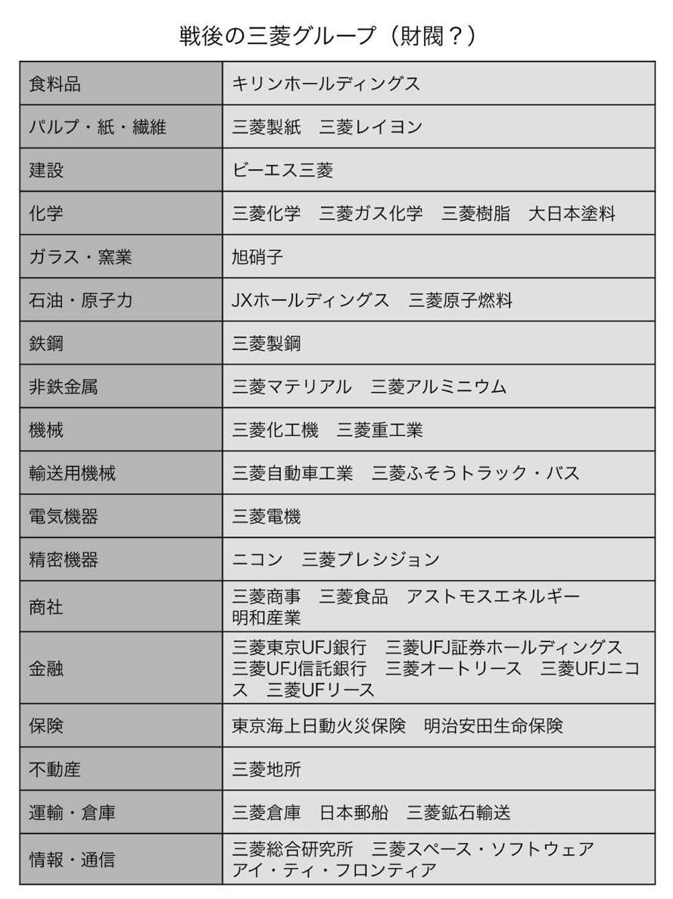
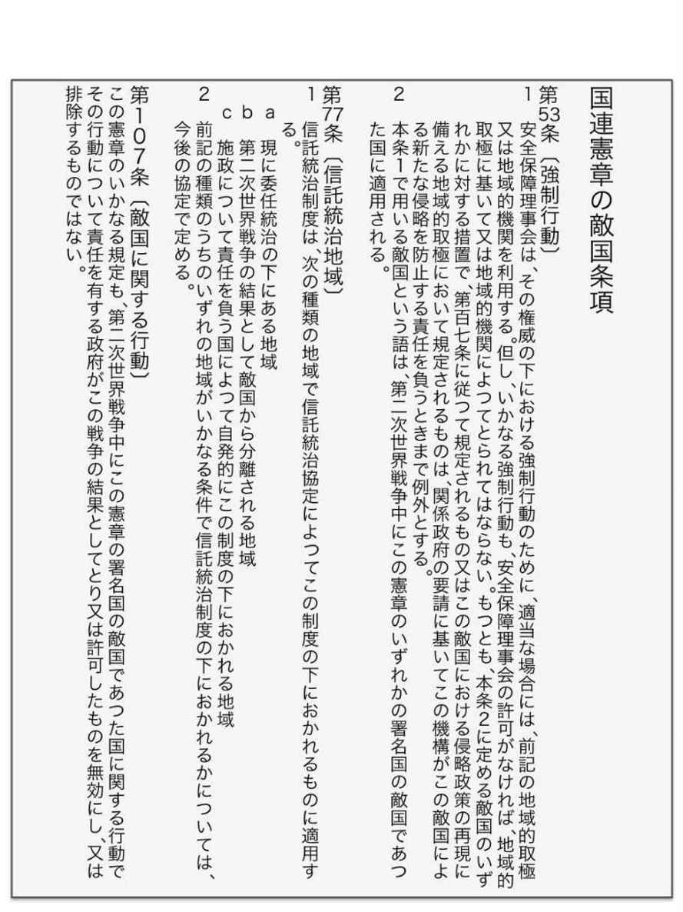
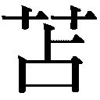
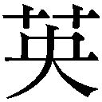

| 日本人の99%が知らない戦後洗脳史 | |
| 苫米地英人 | |
| Cognitive Research Labs (2014) | |
日本はアメリカの属国だという言い方がある。
もし本当にそうであるなら、ぜひとも是正すべきものであろう。
しかし、属国云々を言う前に、私たち日本人は、ある大きな事実を忘れてしまっている。その欠落を埋めないまま、アメリカとの関係をどうこうしようとすることはまったく無意味だということに、いまの日本人は気づいていないようなのだ。
アメリカの内政干渉もしかり、中国やロシアとの関係についても、その欠落を埋めることで、正常化することが可能であるのに、誰もそれには手をつけようとはしない。憲法改正問題も、それに連なる安全保障上の問題もすべては枝葉末節、その欠落の前では、微々たる問題なのに、だ。
不思議なのは、政治家や官僚は当然としても、文化人やジャーナリストまでが誰ひとり、それを問題視していないことだ。それが私には異様な光景に映るのである。
そう。いまの日本は異様なのだ。
どこが異様なのか？ なにが、そんなにいびつなのか？
その答えは一つ。「日本は太平洋戦争で負けた」ということをまったく理解していないからだ。
敗戦国・日本。
その意味をいまこそ本気で考えねばならないと私は思っている。
別にいまさら猛省しろと言いたいわけではない。自虐的に、謝罪をしまくれと言いたいのでもない。もっと単純に「負けた事実」を真正面から受けとめるべきだと言っているだけだ。
最近、よく耳にする意見として、なぜいつまでもアメリカの言いなりにならねばならないのか、というものがある。しかし、その答えも、日本が戦争に負けたからということで説明がつく。
戦後間もなく70年、日本人はすでに太平洋戦争のみそぎは終えたと思っているが、敵国であった連合国はそうは見ていない。日本人は日本を日本国だと思っているが、連合国はそう思っていないのだ。彼らにとっての日本はいまだに大日本帝国、インペリアル・ジャパンのままなのである。なぜなら、サンフランシスコ講和条約で吉田茂首相はインペリアル・ジャパンの代表としてサインをしているからだ。国連憲章に敵国条項がいまだに残っているのは、海外から見た日本はジャパンではなく、インペリアル・ジャパンのままだからだ。
いまの日本人は日本をジャパンだと思っているが、海外は大日本帝国だと認識していることを決して忘れてはいけない。通常の経済活動などはもちろんジャパンとして海外は扱うだろう。しかし、国際条約上ではいまだ日本は大日本帝国である〝事実〟を私たちは忘れてはいけないのである。
そして、それは悲観すべきことではないことも併せて言っておこう。その逆に、その〝事実〟を最大限に利用することで、私たちは本当の意味での独立を勝ち取ることができるのである。
そのやり方については、本書の中で詳しく述べていくが、そのために必要な知識を私たちは身に付けねばならない。戦後から現在まで、戦争に負けたことを忘れようとしてきた私たち。〝敗戦〟という事実を〝終戦〟という嘘で覆い隠してきた私たち。その見たくないと思っていた真実を見ることで、逆に私たちは逆転するためのヒントを探し出すことができるのである。
日本は独立した。
天皇は象徴になった。
国連は世界平和のための機関だ。
これらはすべて妄想である。
戦後レジームは嘘で塗り固められてきたのだ。
その妄想をディレートするためにも、戦後日本の歴史を改めて検証していかねばならない。
これは日本の裏面史であり、洗脳の歴史なのである。
嘘で塗り固められたレジーム
目次
世界経済を動かしているものはなにか？
それはゴールドだ。マネーは刷ればいくらでも作れるただの紙切れだが、ゴールドはなにがあってもゴールド。たとえ戦争に負けようが、その資産価値はマネーのように簡単には紙くずになりはしない。ところが、現代人はその代替物でしかないマネーに慣らされてしまっているため、ゴールドの意味を忘れがちだ。
そして、現代日本人が最もゴールド＆ダイヤモンドの価値を忘れていた時がある。それが終戦直後の一時期だ。金や銀よりも一杯のコメの飯、ダイヤモンドよりも一本のタバコやアルコールのほうが重要だと感じていたその時こそ、日本に金銀財宝がうなっていた時はなかったのだから、実に皮肉な話だろう。
戦時中、日本軍は中国及び東南アジア全域を占領地とし、巨大な帝国を築いていた。多くの特務機関も跳梁跋扈し、戦地の情報とともに戦費の調達も行なっていた。もちろん、戦時中においては、戦時国の通貨は他国では紙切れ同様となるのだから、価値があるのはマネーではない。貴金属や燃料、建設資材などで、これらを日本軍は接収し、日本本国に送っていたようだ。つまり、当時の日本にはアジア全域から金、銀、プラチナ、ダイヤモンドなどが集まっていたわけだ。
その上、敗戦間近の昭和19年８月から12月にかけては、戦費調達の名のもとに、国民からダイヤモンドなどの供出を強制している。その時集められたダイヤモンドは政府の買取価格で18億円にものぼる。このほかにも、企業が供出した金、銀のインゴットなども、軍部は押さえていた。
「欲しがりません、勝つまでは」のスローガンのもと、日本国民が窮乏を耐え忍んでいた一方で、軍部には金、銀、ダイヤモンドがうなるほど蓄財されていったのだ。戦後、これらの物資の調査に当たったＧＨＱの将校が、「もしこの資金、物資を有効に活用することができたならば、日本はあと８年は世界を相手に戦えただろう」と言うほどの財宝が、戦時中の日本には集まっていたのだ。
そう。まさに黄金の国ジパング。それが終戦直後の日本の本当の姿だったのである。
ところが、一般国民から見れば、終戦直後の日本はただの焼け野原。食うものも着るものも、住む場所さえない、ひどいありさまであった。軍部が貯めた資材や食料があれば、どれほどの人々が救われたか、と思うのだが、その資材も資金も決して庶民の手に渡らなかった。
ではどこに行ったのか？
それが隠匿退蔵物資事件と呼ばれる一連の騒動となり、これこそが、現代日本の裏面史の始まりとなる。
ＧＨＱが隠匿退蔵物資の捜査に乗り出したのは、昭和20年９月30日。ＧＨＱ経済科学局（ＥＳＳ）の初代局長レイモンド・Ｃ・クレーマー大佐が、武装兵と装甲車で日本銀行を急襲し、渋沢敬三日本銀行総裁以下幹部たちの前で、「この日より日本銀行はＧＨＱの管理下に置く」と宣言し、翌日、日銀の地下金庫をさらって、ダイヤモンドなどすべてを没収している。翌月18日には、戦時中に日本軍が民間から接収していたダイヤモンド18億円分を三井信託銀行の地下金庫で発見、そのすべても持ち去り、日銀地下のＧＨＱ専用金庫に入れている。
ＧＨＱは進駐してからわずか２ヶ月あまりで２億４０００万ドル分にものぼる貴金属を発見し、日銀の地下金庫や大阪造幣局にストックしていったのである。現在の１ドル約１００円で換算しても２４０億円にもなるから、当時の価値にすればどれほどのものになっただろうか（ちなみに、戦後３年間のインフレ率は１００倍と通常言われている）。
しかし、これで驚くのはまだ早い。翌年４月には、東京湾越中島の海中から金塊１２００本、プラチナ３００本、銀塊５０００トンを発見、その後も熱海で40キロの粒ダイヤがびっしり詰まった壺が見つかるなど、日本各地から次々とお宝を見つけ出していく。
問題は発見したこれらの財宝をどうしたのか、だ。
普通に考えれば、戦勝国のアメリカが略奪横領したと思うだろうが、少し状況は違ったのだ。
昭和22年８月13日の第００１回国会隠退蔵物資等に関する特別委員会第８号において党人派の議員、石橋湛山蔵相ははっきりこう証言している。
「昨年十一月十五日の計算で千数百億円の物資を司令部は日本政府に引渡しておる。それはむろん旧陸海軍等が持っておったものを司令部が差押さえて、さらに日本政府に渡したものなんですが......一体どこに引渡されたのか。私は閣議にもち出して調べてみました。内務省その他の諸君に来てもらって調べたのでありますが、役所にある資料は、とてもそんなものはありません。わずか二、三千万円くらいのものが内務省あたりの手を経たようでありますが、千数百億円のものは、どこへどう行っておるかわからない。......そういう経緯もあるくらいで、相当なものがまだあるということは私も信じておるのであります」
なんと、ＧＨＱは返還していたのだ。横領したのは日本の官僚と彼らとつながった財界人たちであった。もともとは国民の資産である財宝や物資を、戦勝国ではなく、戦争責任がある国のトップたちが懐に入れてしまったのだ。官僚たちは終戦直後から腐っていたのである。
官僚や財界人たちのやり口は、隠退蔵物資の行方を執拗に追った世耕弘一代議士が書いた『隠退蔵物資摘発の真相』（新星工房刊）に、詳細が載っている。
「私が内務政務次官に着任早々、各局各課の責任者を呼んで詳細に（隠退蔵物資等の）調査を進めてみると、いろいろおかしなところが、あとからあとから出て来た。例えば特殊物件（ＧＨＱ司令部が一旦差し押さえたのち、日本に返還した隠退蔵物資）の処理の後始末がハッキリしていないのである。80何億円もの物資が行方不明になっている。または法外な安値で処理されているのもある。例えば、時価１００億円近くすると思われるアルミニウム、ワイヤロープ類が10分の１以下の７億円の評価で払い下げられている。処理にあたった兵器委員会のメンバーは住友、浅野などの５つ、６つの財閥会社で彼らは財閥解体が叫ばれている世相を尻目に、関係者と結託して、陰ではそういう法外な利潤を独占していたのである。いろいろ調査した結果隠退蔵物資は公定価格で少なくとも１０００億円ある。これらの半分はまだ隠匿されているという見込みがついた」と。
この後、世耕代議士はどこでどんなものが見つかったかを具体的に探り出していく。栃木県からは軍服約10万着、砂糖４５０俵など３億円分。京都・滋賀からは繊維製品、雑貨など公定価格約30億円などだ。
「これらの物資の持ち主は戦時中、官憲と民間会社が結託してつくった各種の営団が多い。特に交易営団が大口である。これは戦時中、外地と交易するためつくられたもので、三井、三菱で過半数の株を持っている。彼らの隠匿品は例えばタオル１本50銭というような低い見積もりになっている。これを闇に流したとすると、その利益は計り知れない」
交易営団とは、戦争末期、国民からダイヤモンド18億円分の供出を行なった時の実務を担当していた法人だ。
「彼らは当時の相場で１カラット２２００円で買い上げている。今日の相場だと12万円。約50倍の値上がりである。これを仮に10倍としても18億円のダイヤは１８０億円になる。このダイヤモンドは全部軍用に供したわけではなく、輸出したわけでもない。この残りのダイヤモンドの行方がいまもってわからない」
１８０億円分のダイヤまで、官僚と旧財閥は着服していたのである。
ところが、だ。世耕代議士のこの記述の中に、一つおかしなところがあるのだ。勘のいい読者なら、すでに気づかれているかもしれないが、消えた１８０億円分のダイヤとは、ＧＨＱが昭和20年10月18日に、三井信託銀行の地下金庫から発見した18億円分のダイヤのことなのだ。
世耕代議士が「いまもってわからない」と書いているダイヤは、進駐から２ヶ月にも満たない段階でＧＨＱが発見し、日銀の地下金庫に移されていた。しかし、ＧＨＱはそれを伝えていなかった。
これはどういうことだろうか？
当然と言えば、当然だが、ＧＨＱも隠退蔵物資のすべてを返却しているわけではなかったということだ。かといって、彼らは着服ばかりしていたわけでもない。では、どうしたのかといえば、当時の政官財に意図的に流していたのだ。日本の中枢を操るための資金として、日本国民が供出させられた、あるいは国のためにと自ら供出したダイヤが使われたのだから、ずいぶん人をバカにした話であろう。
また、このことにいち早く気がつき、自ら隠退蔵物資等処理委員会を創設して、事件を追った世耕議員はあっという間に失脚させられてしまう。なんと当時の大手マスコミが、隠退蔵物資を横流ししているのは世耕議員のほうだというガセネタをこぞって書き立てたからだ。
世耕議員は自ら働きかけてつくった隠退蔵物資等処理委員会副委員長の座をわずか１ヶ月で追われてしまう。この時、議員の免職に暗躍したのが経済安定本部、略して〝あんぽん〟。この組織は昭和21年にＧＳ（ＧＨＱ民政局）の意向で創設されたもので、現在は内閣府に統合された経済企画庁がその後継組織である。
官僚とマスコミが一体となって、邪魔な人間を陥れる体制は戦後、すぐにでき上がっていたことがこれでよくわかるだろう。
ＧＨＱに従えば隠退蔵物資の余禄にあずかれる一方、反抗するならば世耕議員のように冷や飯を食わされる。ＧＨＱはこの単純なアメとムチを使って、日本のトップたちを掌握していった。
敗戦国ゆえ、彼らに逆らうのも難しかっただろうが、多くの官僚たちは積極的に協力していた節がある。官僚の根性がとことん腐っていたからという理由もなくはないだろうが、決してそれだけではない、ある状況があったのだ。
ＧＨＱには二つの派閥があったことはよく知られている。一つはＧＳの局長コートニー・ホイットニー准将を中心とするリベラル派。財閥解体や労働組合の組織化など社会主義的な制度を日本に持ち込んだのは彼らだ。日本国憲法の草案を作ったのも准将で、彼は戦争前、フィリピンで弁護士をしていた法律家でもあった。戦後日本が左傾化したのは、中ソに洗脳された人々が社会の中枢に入り込んでいったためと言われるが、それは大間違いだ。
占領当初、ＧＨＱが積極的に、左派勢力を優遇し、戦前・戦中に力を振るった政治家や財界人、国士たちを公職から追放していったためだ。つまり、いまの日本のリベラル派は、社会主義国家の陰謀によってできたわけではなく、ＧＨＱの置き土産なのだ。
一方、ＧＳと対立していたのがチャールズ・Ａ・ウィロビー少将率いる参謀第二部（Ｇ２）だ。治安と諜報を担当していたこの部署は、終戦直後の数々の謀略事件に深く関わるキャノン機関などを傘下に収める部署で、リベラル派で固まっていたＧＳとは対照的に反共思想で固まっていた。
ＧＳ対Ｇ２。当初、この二派の戦いはＧＳが圧倒していた。ホイットニー准将に対するマッカーサーの信任が厚かったことやアメリカ本国でもリベラル派が優勢だったこともあって、最初のうち、対日政策はＧＳが取り仕切ることになる。日本国憲法下で初の内閣となった社会党の片山哲内閣、続く民主党の芦田均内閣はＧＳの後押しによってつくられたものだ。
しかし、反共主義者であり、自伝の中でリベラリストのことをアメリカの敵であり私の敵とまで書いている、ウィロビー少将にとって、この状況は決して芳しいものではなかった。反撃の機会を狙っていた少将は、配下の特務機関を使って、ＧＳの動向を探り続け、ついに彼らの急所を掴む。
昭和23年６月、日本の政財界を巻き込んだ一大贈収賄事件、昭和電工事件が勃発する。芦田内閣が発足して３ヶ月での事件であった。逮捕されたのは福田赳夫大蔵省主計局長、大野伴睦民主自由党顧問、栗栖赳夫経済安定本部総務長官ら、すべてＧＳ派閥に所属する政治家、官僚たちばかりであった。捜査の手はＧＨＱにも伸び、最も窮地に陥ったのがホイットニー准将の腹心チャールズ・Ｌ・ケーディス大佐だった。
事件を執拗に追う、日本の警察に業を煮やしたケーディス大佐は「昭電事件の捜査は検察のみでやれ」と検事総長に命令（藤永幸治著『特捜検察の事件簿』講談社現代新書より）、事件の捜査から警察を外す。警察の裏にはＧ２の影がちらついていたからだ。
それにしても、なぜケーディス大佐は警察の代わりに検察を頼ったのか？ その理由は、昭和22年11月１日、隠退蔵物資を探し出すための機関、隠匿退蔵物資事件捜査部を検察庁内部に発足させたのが、大佐自身だったためだ。大佐は隠匿退蔵物資事件捜査部の人員を大幅に増やし、捜査権、逮捕権なども付与して、昭電事件捜査本部を発足。そこに全権を与えて、なんとか事件を収束させている。
ＧＳはこの事件によって、自分たちの手足として動く、捜査機関の必要性を痛感し、昭電事件捜査本部を改組して新たな捜査部を検察庁に設置する。それが、東京地検特別捜査部なのである。
これを見れば、東京地検特捜部が最初からＧＨＱによってつくられたことがよくわかるだろう。
結局、この事件によって、芦田内閣は総辞職し、新たな内閣として、第二次吉田内閣が発足する。吉田首相は、かねてからウィロビー少将とは懇意で、少将が定宿とした帝国ホテルに毎日のように通っていたと、帝国ホテルの元社長は証言している。
さて、これでわかるように、ＧＨＱが残していったものは日本国憲法だけではない。現在の警察と検察の対立の構造、改憲派と護憲派という対立の枠組みなど意図していないものまで温存されている。
私が改憲論争を基本的にバカバカしいと思うのは、すべての発端がＧＨＱの内輪もめにあるからだ。ＧＨＱの占領が終わって60年以上の年月が経過しようとしているのに、なにが悲しくて、彼らの代理戦争を続けなければいけないのか？
いまはもっと日本のことを真剣に考えるべき時が来ていると私は思うのである。
ＧＳ対Ｇ２の争いのはざまに、隠退蔵物資が消えていったことはすでに書いた。その総額がどのくらいになるのか、正確にはわかっていない。総額３７００億円といわれているが、これにしたって確かな数字ではないのだ。一説によれば、数兆円、数十兆円とも言われることもある、巨大な宝の山脈なのだ。
唯一、公式の数字として残っているのは昭和26年にＧＨＱが日本に返還した、金１０２トン４１６億円、銀１７０３トン１７４億円、白金１トン７億円、ダイヤ16万カラット72億円など総額６６９億円（当時の時価）分だけ。総額３７００億円だとすれば、３０００億円分以上の物資が消えてしまっている。
これら、日本人の財産はどこに行ってしまったのだろうか？
ここで浮上してくるのがＭ資金の話だ。
多くの日本人にとって、Ｍ資金は眉唾話として認識されているだろう。全日空、神戸製鋼など一流企業が被害に遭った巨額の詐欺事件として有名だからだ。
しかも、その手口は驚くほど単純。日本には数千億円以上の秘密資金が某組織によって管理されており、ごく一部の特別な企業に限って低金利で融資している、というものだからだ。普通に考えれば、ひっかかりようもないインチキな話である。
ところが、どういうわけか、錚々たる企業の代表や幹部がその話を信じ、念書などを書いてしまっているから不思議だ。
なぜそんな眉唾話をいとも簡単に信じてしまったのか？ 考えられる理由は二つ。詐欺師たちの話があまりにもうまかったか、Ｍ資金が存在することをもともと知っていたか、だ。
つまり、一般庶民にとってはＭ資金などバカバカしいトンデモ話でしかないのだが、〝特別な〟企業に限ってはリアルな話だったのである。
高野孟著『Ｍ資金』（日本経済新聞社刊）には被害に遭った全日空の元社長大庭哲夫氏がこんな証言をしていたというエピソードが載っている。
「〝私がいくらバカでも根拠のはっきりしない融資話に騙されて軽々に念書など書くわけがないでしょう。私はねえ、前の会社である人の下についていたときに、その人がこのお金を使うのを見たんですよ。だから......〟」
大庭氏の前職は日本航空の常務取締役。日航は初代社長に前日銀副総裁の柳田誠二郎氏が就任している国策企業であり、Ｍ資金が入ってもなんらおかしくない〝特別〟な企業だろう。
Ｍ資金はある。そう知っていたからこそ、彼らは騙されたのだ。事実、『Ｍ資金』には、大庭氏の失脚後、多額の資金が全日空に入った形跡があるとも書かれている。
そう、大庭氏が〝見た〟ようにＭ資金は存在する。ただし、それはＭ資金詐欺のような間にブローカーが入ってどうこうするようなものでは決してない。もっと巨額で、もっと複雑な枠組みの中において存在してきたのである。
しかも、Ｍ資金はつい最近まで存在していた形跡がある。
それは２００９年６月、スイスの国境付近で突如、姿を現したのである。
２００９年６月、スイスとイタリアの国境付近で１３４５億ドル、日本円にして13兆円もの米国債を所持した日本人二人がイタリア財務警察によって逮捕された。
一体この日本人たちはなに者なのか？ そもそも彼らはどうやって13兆円もの米国債の現物を手に入れたのだろうか？ なぜ、スイスの国境近くにいたのか？ この事件は多くの謎をはらんでいた。
なにより不思議なのは彼らが持っていた債券の中にケネディ債が混じっていたことだ。この債券はＪＦＫが大統領として在任していた１９６１年から63年までの３年間しか発行されていない珍しいもので、実に50年前の債券が突如、亡霊のように姿を現したことになる。
さらに奇妙だったのは報道の仕方だ。これだけ衝撃的なニュースであるのに、続報が出たのは事件から９日もたったあとで、その内容も〝米国債は偽物で、イタリア当局はすでに日本人たちを釈放した〟というものであった。
偽物だったから釈放した!? こんなおかしな話はないだろう。それがもし本当ならば、ことは13兆円分の米国債偽造事件である。13兆円といえばちょっとした国の国家予算に匹敵する金額だ。であるのに、「ニセ債券は使わなければ罪に問えない」と言って、当局はその犯人たちを無罪放免にしているのである。明らかに裏になにかある。
そもそも、この事件は最初から最後までおかしなことばかりだった。第一報では、犯人がまるで偶然捕まったかのように報道されているが、日本人が捕まったのはイタリアからスイスに向かう列車の中で、列車がキアッソという駅に停車した時。しかし、キアッソはスイスの町なのだ。イタリア財務警察はイタリアからずっと追っていながら、わざわざ国境を越えたところで捕まえているのである。つまり、この逮捕劇は偶然でもなんでもなく、日本人たちはその行動をずっと監視されていた可能性が高かったことが容易に想像がつく。
わざわざ国境を越えたところで逮捕しながら、簡単に釈放した理由は、世界に向けてのメッセージではなかったかと私は思っている。問題はそのメッセージの意味するところと、誰に向けて発せられたのか、だ。
さて、そろそろこの事件の謎解きをしよう。まず、二人の日本人の正体は日本の財務省関係者で、うちひとりは元財務事務次官の義弟らしいとのちに判明する。つまり、彼らは日本政府に近い筋から依頼されて、スイスに入ったのだろうことがこれでわかる。彼らがスイスに行った理由は一つ、米国債の換金のためだ。
では、その金をなんに使うのか？
私は自民党の選挙資金ではなかったかと想像している。
この事件が起きた２００９年６月といえば、民主党が政権を取った８月31日の衆議院選挙の直前だ。自民党への逆風が吹き荒れる中で、彼らは多額の選挙費用を調達しなければ勝てないと踏んだのだ。そのために二人の日本人がスイスに向かったのである。
ところが、彼らは途中でイタリア当局に捕まってしまった。
なぜだろうか？
この謎解きをするには日本の政治体制を知らなければ、理解できないだろう。
終戦直後の政治はＧＨＱの意向によって動かされていたという話はさきほどした。この状況は過去70年、基本的には変わっていないと私は思っている。もちろん、日本のすべてを握られていたと言いたいわけでも、アメリカの傀儡政権だったと言いたいわけでもない。それはさすがに言い過ぎだ。
しかし、アメリカの利益に反することが起きれば、たちまち介入できるような仕組みが長らく維持されてきたのは間違いないところだろう。
それを打破しようと動いた政治家たちは必ず冷や飯を食ってきた。鳩山一郎しかり、田中角栄しかり、小沢一郎しかりだ。その逆にご機嫌とりがうまければノーベル賞をもらうことも可能。アメとムチ。彼らは日本のハンドリングを実に巧妙に行なってきたのだ。
そのアメとなったのがマネーだ。原資となったのは言うまでもなく、隠退蔵物資。時価にして数十兆円はあるとも言われるこの金が、時の政権政党を動かしてきたのである。
その〝資金〟はずっとアメリカにあり、管理もアメリカの共和党が行なってきた可能性が高い。しかし、ある時期から、日本の管理に移されたのではないかと私は考えている。その証拠となるのが、捕まった日本人たちが持っていたケネディ債だ。
共和党のニクソンが大統領選で民主党のケネディに敗北した翌年に、〝資金〟の移譲式が密かに行なわれたらしい。アメリカ側の代表はニクソン。日本側の代表は岸信介だと言われている。
アメリカ側がなぜ、そのタイミングを選んだのかと言えば、民主党選出のジョン・Ｆ・ケネディが大統領になったからだ。共和党とすれば、〝資金〟をアメリカ民主党に自由にさせるぐらいなら、日本の自民党に渡したほうがいいと判断したのではないだろうか。だから、ケネディ債が渡されたのだ。
また、岸信介といえば日米安全保障条約締結に尽力している、アメリカにとって十分に信頼に足る人物。彼が首相を辞めたあとも日本政界に隠然たる影響力を持てたのは、この時に移譲された〝資金〟の存在が大きかったのではないかと思う。
もう一つ、スイスで捕まった日本人が持っていた米国債はビル・クリントン大統領時代のものが多かったとも言われている。言うまでもなく、クリントンも民主党。この時も、〝資金〟は米国債の形にして、日本に移されたのではないだろうか。アメリカ共和党は大統領選で負けるたびに〝資金〟を日本側に動かしていたことがわかる。
しかし、そうなると２００９年の事件はますます不思議なのだ。
〝資金〟の性格上、自民党が選挙で勝つために使われるのが正当な使われ方だ。ところが、今回に限っては、その流れを断ち切るような、強力な意思がどこかで働いたことになる。
〝資金〟を現金化できなければ、自民党は選挙に勝てない。自民党が勝てなければアメリカのジャパンハンドラーにとっても痛い出来事のはず。だから、通常なら、現金化を阻止することなどバカげている。
しかし、実際には、自民党はマネーを手にすることができなかった。ということは、答えは一つしかない。あの時、自民党はジャパンハンドラーから見捨てられたということだ。だから、換金を途中で阻止されたのである。そして、この〝資金〟はアメリカ共和党の手を離れ、アメリカ民主党のものとなってしまった。
では、これから米民主党が日本を牛耳るのかといえば、そんなことはない。財政赤字で苦しむいまのアメリカに陰の資金をプールしておく余裕などないのだ。いや、それどころか、今回の事件はもともと〝資金〟を手に入れるために、米国が仕掛けたのではないかと私は想像している。
というのも日本人二人がスイスで捕まる３ヶ月前、アメリカのガイトナー財務長官が不良資産救済プログラム（ＴＡＲＰ）の不良債権の買取資金として１３４５億ドルの用意があると発表していたのだ。
そう。この金額は、スイスで捕まった日本人たちが持っていた米国債と同額だ。これは明らかにシグナルで、アメリカは日本に例の〝資金〟から１３４５億ドルをよこせ、と言っていたのだ。
ところが、自民党は選挙に勝ちたいがために、それを無視、あるいは選挙で勝ってから渡そうとしたのか、その辺の事情はわからないが、ともかく秘密裏に換金しようとして途中で阻止されたのだ。
これがこの事件の真相のすべてだ。
これによって、自民党は敗戦直後から連綿と持ち続けていた裏資金をほぼ失ってしまった。同時にアメリカも、ＴＡＲＰの買取資金に充当して消費してしまった。
つまり、２００９年のスイス事件によって、戦後から続いてきた隠退蔵物資を原資とした裏工作資金、日本をハンドリングするための裏資金がすべて消えてしまったのである。
日本の政治体制をアメリカ寄りに維持するために使われた裏資金、第一次鳩山内閣から続いた55年体制を陰から支えた資金があの事件によって途絶えてしまったのだ。
それは、日本の裏面史に流れていた、大きな金の流れの一つが、あそこで終わった、ということでもある。
日本占領下のＧＨＱがただちに着手したのが隠匿退蔵物資の捜索だったと前章で記した。しかし、彼らが着手したのは隠匿退蔵物資だけでは当然なかった。天皇家の財産も狙っていたのである。
昭和20年９月22日、終戦後１ヶ月で、ＧＨＱは「金融取引の統制に関する件」という通達を日本政府に送っているが、その中に皇室財産の詳細を報告しろという指示があった。
衝撃的なのはこの文書の中にあった一文。なんと天皇家のことを「the greatest of the "Money gang"」と表現していたのだ（黒田久太著『天皇家の財産』三一書房刊より）。
アメリカ側が世界最大級のマネーギャングと認識していた天皇家の財産とはどれほどのものであったのだろうか、まずは戦前から検証してみよう。
維新前の天皇家の財産はあまりなかったと通常思われているが、『皇室財政沿革記』を見ると、10万２０００円ほどを所有していたことがわかる。現在の金額にすると５億円以上になり、決して貧乏というわけではなかった。ただし、その金額では薩長の戦費を支えることはできなかったため、倒幕派は自らの持ち出しとイギリスからの戦費の借り入れで、維新の戦争を乗り切った。維新で戦費を工面できなかったことが、天皇家に財産がなかったと思われてしまう発端だったようだ。
維新後、明治政府は天皇家に日本の富を集中させるべく画策する。この計画は、明治になって初の帝国議会が開催される直前に、バタバタと起こっている。というのも、議会が始まれば、政府所有の財産は民間に放出せよという圧力がかかることは必定だったため、岩倉具視らの強い主張によって、天皇家に移し替えることで政府財産の温存を図った側面もあったようだ。
明治政府は、全国各地にあった官有地を皇室所有に書き換え、同時に政府所有の株式、債券も天皇家のものとした。
その結果、天皇の持ち株は日本銀行の資本金１０００万円のうちの半分５００万円分。横浜正金銀行の資本金３００万円のうちの３分の１、１００万円分。日本郵船への政府出資金２６０万円分がすべて天皇家のものとなる。
加えて、佐渡金山と生野銀山も天皇家の私有財産となり、全国の官林地４８１万町歩のうち、３５７万町歩も帰属される。当時、日本の民有地は全部で４８１万町歩ほどであったから、天皇家の所領は、日本国民全員が持つ土地とほぼ一緒という広大なものとなった。
戦前の天皇家が世界でも有数のgreatestな資産家であったことがこれでよくわかるだろう。
問題なのは、なにゆえＧＨＱは、"Money gang"と、犯罪者のような呼ばわり方をしたのかという点だ。
明治新政府の画策によって、日本の富の半分以上を握っていた天皇家は、日清、日露、日中戦争の中で、その資産を驚異的に増大させていった。その方法は投資による資産運用であった。皇室は宮内省の内蔵頭の指揮のもと、金融系や海運系、主要財閥系の株を買い増しし、着実に資産を増やしていく。これら皇室の買った株の価格は、戦争景気によって跳ね上がり、配当金もうなぎ上りであった。欧米諸国の王や権力者同様、戦争をビジネスと捉えて、効率的に運用益を出していたことになる。
戦争ビジネスでの収益増加は勝利した日清、日露の戦いだけでなく、太平洋戦争中においても同様であったようだ。
『米従軍記者の見た昭和天皇』（ポール・マニング著、マルジュ社刊）によれば、太平洋戦争後、天皇家が持っていた有価証券のうち株式は、約１０６万３０００株。財閥系、金融系などいずれも優良株であったという。
株は国内のみならず、「満州や中国にあった植民地企業の株に加えて、シンガポール、香港、台湾、オランダ領東インド諸島などで設立された企業の株も保有」し、「さらに日本郵船と大阪商船の株を保有。その二社とも、日本軍が占領した地域すべての海運業に関係していた」とある。
これを確認したアメリカ陸軍情報部は「皇室が少なくとも間接的に太平洋戦争に投資していたことは間違いない」と明言し、ＧＨＱは「皇室そのものが三井、三菱、住友などの旧財閥および東京電力と利益共同体であったことを示唆している」と報告している（「皇室は東京電力と利益共同体」という表現は実に興味深い。東日本大震災以後、なぜ東電を潰すことができなかったのか、その理由の一端と、日本社会の根本的な構造が、これによって透けて見えてくる）。
ＧＨＱは、天皇家が戦争関連株で巨額の運用益を出していることを指して、マネーギャングと言っていたのだ（ただし、アメリカ本国はまた別の考え方をしていたようで、それについては後述する）。
かくして、天皇家の資産は明治政府樹立以来、国家予算と肩を並べるレベルとなったのである。しかし、戦後、ＧＨＱの要請によって、宮内省から発表された天皇家の資産は15億９０６１万５５００円しかなかった。この金額は当時の国家予算の約３％に当たる巨額なものだが、これまで見てきた天皇家の資産形成を考えると、かなり少ない額であることがわかるだろう。
天皇家にあったはずの多くの流動資産が消えている──。ＧＨＱはそう考えて、その資産を躍起になって追い始める。
天皇の財産はどこに消えたのか？
そのヒントはやはりスイスにあった。
第二次世界大戦中、最も暗躍した銀行がスイス・バーゼルにあるＢＩＳ（国際決済銀行）だ。いまでこそ、中央銀行の中の中央銀行と言われ、国際金融の指導的な立場となっているＢＩＳだが、戦時中はナチスドイツの資金を世界でただ一つ決済していた悪名高き存在であった。
不思議なのは、いくら中立国スイスに設立された銀行だったとはいえ、事実上、連合国を敵に回すような行為がなぜ、堂々とできたのか、だ。
理由は二つある。一つは、条約に守られていたからで、ＢＩＳ設立時に締結されたハーグ条約の第10条にはこんな一文があった。
「ハーグ条約締結国すべてに対し、戦時、平和時にかかわらず、金取引を制限してはならないと取り決めるとともにＢＩＳに預託された金はいかなる場合も没収できない」
ＢＩＳにゴールドが一旦入ってしまえば、どんな大国であっても、強制力が及ばなかったのである。
二つ目の理由は各国の思惑が複雑に絡み合い、ＢＩＳのナチス寄りの行動が、イギリス、アメリカ、フランスといった連合国側の国々の利益になる場合も多々あったためだ。
もともとＢＩＳは、第一次世界大戦で負けたドイツの賠償金の管理を行なうために設立された機関で、イングランド銀行、ファースト・ナショナル・バンク・オブ・ニューヨーク、ドイツ銀行（ライヒスバンク）、フランス、イタリア、ベルギーの各中央銀行ほかと、日本からは、中央銀行の日本銀行と、日本で唯一国際決済を行なう横浜正金銀行が実質的に出資して設立されている。
しかし、当時のドイツは敗戦不況と世界恐慌によって賠償金が払える状態ではなかった。そのため、戦勝国は逆にドイツに資本を投下する。フランスは多額の借款をドイツに供与し、アメリカは賠償金をデリバティブ化したヤング債を大量に買い、これを国民に売りさばいていた。
具体的に言えば「フランスのＢＩＳへの貸し付け金は２億３２００万スイスフランに達しており、イギリスの場合は８０００万スイスフランであった。このヤング案にもとづく貸与金は大部分がドイツに投資されていたのである。他方ライヒスバンクはＢＩＳのドイツに対する投資の利子を毎年きちんと支払い続けていた。金融利益と並んでイングランド銀行とフランス銀行はＢＩＳの存続にひとつの経済政策的な利益を見ていた」（「第二次世界大戦期の国際決済銀行」『経済論叢』所収西牟田祐二より）のである。
これらの措置によって、ドイツの破産は、そのまま戦勝国の巨額の損失に直結する構造ができ上がっていた。
こういった状況下のヨーロッパにおいて、第二次世界大戦の捉え方は、相反する二つの局面が存在することになる。一つは戦場での局面で、連合国はドイツ軍を殲滅せんがために激戦を繰り広げ、多くの兵士たちが血を流し、命を落としていた。一方、経済的にはドイツの破綻を望まず、そのためにドイツ経済を陰ながら支えるという皮肉な局面が出現していたのだ。
その陰ながら支える部分を担当していたのがＢＩＳであった。
「国際決済銀行は第二次世界大戦中、敵対する連合国と枢軸国のきわめてハイレベルの代表が公然と協力し合う場でもあった。敵味方の立場を越え、緊密な関係にあったのは、各国の通貨・金融政策を担う中央銀行総裁である。もちろん、このことはそれぞれの陣営を代表するヒトラー総統、米国のローズヴェルト大統領、そして英国のチャーチル首相も承知の上であった」（ジャン・トレップ著『国際決済銀行の戦争責任』日本経済評論社刊より）
にわかには信じがたいが、ＢＩＳの内部では戦時中もずっと敵味方が協力し合って銀行業務をこなしていたのだ。それはＢＩＳ執行部の構成を見れば、一目瞭然である。総裁はアメリカ人銀行家のトーマス・Ｈ・マッキトリク、総支配人はフランス人銀行家のロジェ・オボワン、総支配人補佐にはドイツ人でナチス党員でもあったパウル・ヘクラーが就いていた。また、ＢＩＳには日本人もいた。横浜正金銀行の北村孝治郎がＢＩＳの理事となっており、同じく横浜正金銀行の吉村侃が、ＢＩＳ為替課長として日常業務を行なっていたのだ。
戦時中のＢＩＳでは、英、仏、独のトップが協力して運営を行ない、アメリカ人の総裁のもとで、淡々と業務を行なう日本人がいた。ＢＩＳの中と外ではまったく違った世界が展開されていたことになる。
では、具体的にどんな形でＢＩＳはナチスの決済をサポートしていたのだろうか？ 先にも引いたが、京都大学教授、西牟田祐二氏の論文「第二次世界大戦期の国際決済銀行」に詳細が載っている。
一番の問題とされたのは、ＢＩＳがドイツから送られてくるゴールドの〝回転台〟としての機能を自他ともに認めていたことだ。要は、占領地域から略奪した金を受け入れることで実質的にマネーロンダリングを行なっていたことである。
一例を挙げれば、フランス占領中に約１トンのナポレオン金貨がＢＩＳに運び込まれたが、ＢＩＳはその出どころを問わずに受け入れている。同じようなことはドイツ占領下のデンマークでも起きており、こちらはほぼ８トンのナポレオン金貨を、ハンガリーからは２トンの金貨を受け入れた。それだけではない。ＢＩＳは自らが持つ鋳造所で金貨を鋳直し、スイスの検品マークつきの金の延べ棒に変えることまでしている。それら鋳造し直した金の延べ棒の中身には、アウシュビッツのユダヤ人収容者から奪い取られた金の入れ歯や指輪も含まれていたことが戦後の調査で判明している。
ＢＩＳは武器購入のための決済も行なっていた。ドイツはポルトガルやユーゴスラビア、スイスといった国々から軍需物資を購入していたが、代金の決済業務はＢＩＳが行なっていた。ユーゴであれば、スイス国立銀行に開設したライヒスバンクの金保管庫からスイス・ユニオン銀行内のユーゴスラビア国立銀行の保管庫へ金を移すことで支払いを完了させている。
ポルトガルへの送金は、ＢＩＳ専用の輸送会社がゴールドを陸路で首都リスボンに運び、さらにそこからアメリカのニューヨーク連邦準備銀行内にあるポルトガル銀行の保管庫まで送っていたことがわかっている。
ただし、ポルトガルはゴールドでの決済を拒否していた。ドイツが負けた場合、ゴールドでは連合国から返還を求められる可能性もあることを見越して、自国の通貨エスクードでの支払いを要求していたのだ。ＢＩＳはゴールドをエスクードに換金する作業も行なっており、最終的にはほぼ20トンの金（１億スイスフランに相当）をリスボンに運んでいる。
このように、ドイツの戦争犯罪の片棒を担いでいた状態だったのだ。
しかし、不思議なのは国際機関であるはずのＢＩＳが、なぜそこまでドイツ側に肩入れしたのか、だ。各国の中央銀行が出資した機関でありながら、あまりに公平性、健全性に欠ける行為に手を染めている。
この疑問に答えるのは実は簡単で、ＢＩＳは国際機関的な性格を持つものの、その実態は民間銀行となんら変わらなかったのだ。経営は完全に自己勘定で行なっており、まず最初に考えなければならなかったのは利潤の確保であった。その利潤の85％はドイツの利払いによって発生していたのだから、ドイツを切るという選択肢はそもそもありえなかったのである。
しかし、それでも疑問が残るだろう。明らかに連合国の敵を利しているのであるから、自分たちの儲けよりも、優先させるものがあるだろうと。
たぶん、ここが一番の疑問点であろう。自らの儲けと、敵国への戦争協力を天秤にかければ、儲けを捨てるのが一般的な考え方だ。
しかし、銀行家はそうは考えない、ということを私たちはよくキモに銘じておかねばならない。これは世界の仕組みを理解する上での基本ともなる。
銀行家は敵国への協力と利潤を秤にかけると、利潤を取るのである。いや、どんな場合でも、儲けだけにしか興味がないのである。
だからこそ、彼らはナチスの金を積極的に受け入れたのだ。ビジネス的に見れば、ナチスの資金を独占できる旨みがあったのだから扱わないほうがおかしい。ナチスのほうも、ＢＩＳによって軍需品の代金の決済ができるのだから、これほどありがたいことはない。ナチスが戦時中にもかかわらず、賠償金の利子だけは途切れることなく、きちんと納めていたのはそのためだ。ナチスにとってもＢＩＳにとってもこの取引は決して悪いものではなかったのである。
最優先する事項は利潤の追求。これがＢＩＳのモットーであった。
天皇家の資産はこのＢＩＳを通じて、スイス銀行その他、スウェーデンなどの中立国の銀行に避難させていたらしい。〝らしい〟というのは正確なことはわからないからだ。
ドイツに関しては、最近になってＢＩＳが情報公開を始めたので、だいぶわかってきたが、日本に関しては公開された情報を見ても詳細が判明してこない。わかっているのはＢＩＳの横浜正金銀行口座に１００万スイスフランが常時あったということだけなのだ。
しかし、敗戦前、宮内省からスイスの銀行に向けて多くの指示が出されていたことは、公開されたイギリス情報部の機密文書でも明らかにされている（徳本栄一郎著『英国機密ファイルの昭和天皇』新潮社刊より）。資産は間違いなく隠されたのである。
問題はどうやって隠したのか、その方法だ。
巷間、言われているのは、戦争末期でも制空権を確保できていた香港まで飛行機で金塊を輸送し、そこで換金して、スイスなどに送ったという説や、潜水艦に載せて南米の銀行に移送し、金塊のまま保管したといったものだ。潜水艦説は戦時中、日本はドイツからミサイルを極秘に潜水艦で輸送している事実もあり、決して荒唐無稽な話ではないのだが、いかんせん証拠がない。
では、天皇家は資産を動かしていないのか？ といえば、それはちょっと考えられない。戦前の資産を考慮すれば、宮内省が出した天皇家の15億９０６１万５５００円はあまりにも少額。だからこそ、ＧＨＱはその後も躍起になって金の流れを掴もうと動いていたのだ。
ということは天皇家の資産は、ＧＨＱが本気になって動いても突きとめられなかったか、あるいは、どうやっても手が出せないところに隠されたとしか、考えられないだろう。そして、当時そんな場所といえば、世界でもスイス、それもＢＩＳ以外に考えられないのである。
なぜなら、国際決済の現場に日本人銀行家がいたのは唯一ここだけだからだ。しかも、この銀行はナチスドイツのために、連合国の裏をかくような為替操作を何度も行なっており、人的にも技術的にも条件が整っている。天皇家の資産を隠した先はやはりＢＩＳ以外に考えられないのである。
しかし、一体、どんなやり方をしたのだろうか？
もともと日本銀行と横浜正金銀行はＢＩＳの出資者であり、両行の大株主は天皇家。ＢＩＳにとって天皇家は大切なスポンサーでもあったのだから、その利益を守るのは私企業ならば当たり前。ＢＩＳのモットーから言っても、天皇家の資産を動かすことはなんの問題もなかっただろう。
憂慮すべきは、ＢＩＳ総裁のマッキトリクがアメリカ人であり、敵国である日本を個人的には嫌っていたことぐらいであったが、終戦の年の１９４５年、マッキトリクはＢＩＳ総裁の仕事をほとんどしていなかった。年末には総裁の任期が切れることになっていた彼は、次の就職先であるチェース・ナショナル・バンクを利するための下工作に励んでいたのである。
一方、ＢＩＳの現場には横浜正金銀行の北村孝治郎と吉村侃がおり、その時期、彼らは日本のための極秘工作を行なっていた。
「ナチスドイツが四十五年五月初めに降伏したあと、吉村侃と北村孝治郎はＢＩＳの主任エコノミスト、ペール・ヤコブソンを仲介役として、ベルンにあった米国諜報機関ＯＳＳの責任者アレン・ダレスとの接触を試みた。当時の駐スイス日本公使加瀬俊一と陸軍武官の岡本清豪をダレスに引き合わせるのが目的だった。日本側はダレスに会い、即時戦闘停止を申し入れる。天皇の身の安全を保証することが唯一の休戦条件だった」（『国際決済銀行の戦争責任』より）
結局、この停戦交渉は実らなかったが、吉村たちが頻繁に日本と連絡を取っていたことがこれで明らかになった。天皇家からの指示を受け取っていたことも間違いないだろう。
しかし、ここでまたもや大きな疑問にぶち当たる。
吉村たちが動いたならば、ＢＩＳの口座に痕跡が残るはずなのだ。
ナチスドイツへの戦争協力がわかったのも、情報公開した口座に、はっきり証拠が残っていたからで、敗戦直前、もしもＢＩＳが日本とやりとりしていれば、ＢＩＳの口座に取引の詳細が必然的に残ってしまう。であるのに、ＢＩＳの日本口座には１００万スイスフランが置かれていただけ。これは一体どういうことであろうか？
この謎を解くにあたって、大きなヒントとなったのが、赤十字とＢＩＳのつながりである。
戦時中のＢＩＳに関する詳細な研究リポートである「国際決済銀行の戦争責任」には、戦時中のＢＩＳの業務についてこう書いてある。
「この時期、ＢＩＳの取引は大きく分けて二つ。一つはＢＩＳの自己勘定取引、もうひとつは各国中央銀行のほか、国際赤十字や万国郵便連合など国際機関から受諾する信託勘定取引」
赤十字との取引は、ＢＩＳにとって大きな仕事であった。
具体的には、１９４０年の秋にＢＩＳは、赤十字国際委員会（委員長はスイス人のカール・Ｊ・ブルクハルト）と赤十字社連盟（現国際赤十字社・赤新月社連盟。当時の代表はベルギー人のベルナール・ド・ルジュー伯爵）の主取引銀行となっている。
赤十字とＢＩＳがつながった理由は、同年に起こったドイツのベルギー侵攻による。当時、赤十字は連合国からの通達によって、ドイツの占領地から物資を調達することができなくなっていた。そのため、ベルギーの赤十字社は自国での物資の調達が不可能となり、活動停止を余儀なくされていた。これを打開するため、赤十字国際委員会の委員長ブルクハルトがＢＩＳ総裁のマッキトリクにコンタクトを取ったというわけだ。
この時、マッキトリクはベルギー赤十字社に便宜を図るために一計を案じている。ベルギー赤十字社の口座を一旦閉じ、新たに赤十字社連盟全体の口座をつくって、一括会計にしてしまったのだ。
こうしてしまえば、各国支部の資金の流れは外からでは一切見えない。ベルギー赤十字社がどこから物資を調達したのかも追えなくなり、連合国からの抗議をかわすことができる。
この措置が、のちに天皇家の資産を救うことになる。というのも、天皇家は、戦前からずっと赤十字と密接な関係にあったのだ。
天皇家と赤十字の関係は、日本赤十字社の前身である博愛社が創立された１８７７（明治10）年にまで遡る。１９１２年には昭憲皇太后が10万円（現在の金額で３億５０００万円）を国際赤十字に寄付し、昭憲皇太后基金を設立している。現在も日本赤十字社の名誉総裁には代々皇后が就き、名誉副総裁は皇族から選ぶならわしになっている。
両者のこの密接な関係は戦時中も変わらなかった。
「１９４５年４月、日本政府から赤十字国際委員会に連絡が入った。日本の良子皇后が赤十字国際委員会に、一千万スイスフランの寄付を行う用意があるとの内容だった。数十億円に相当する巨額の寄付だ。その後、満州の連合国捕虜を視察した代表団は、焼け野原の東京を訪れ、無事日本側と手続きを終えた。日本が無条件降伏する数日前の事だ」（『英国機密ファイルの昭和天皇』より）
数日前とは８月７日のこと。つまり天皇家は、敗戦の直前まで赤十字と頻繁に連絡を取っていたことになる。天皇家の資産はこの赤十字を通じてＢＩＳにもたらされていた可能性が高い。
前述したように、ＢＩＳの赤十字の口座はすでに一本化され、外からでは金の流れがわからないよう裏工作を完了済み。赤十字を通せば、ＢＩＳの口座にも痕跡は残らないのだ。
これを操作できるのはＢＩＳの担当者だけだが、その担当者こそ外国為替の課長、吉村侃。すべての駒がここで揃うのだ。
実際、吉村は１９４８年４月までＢＩＳに勤務している。日本の金融に関する戦後処理をスイスで３年間も行なっていたのだ。天皇家の資産はこの期間に、吉村によって処理されたと考えるとつじつまが合ってくる。
ところで、当時、国際決済で使われた通貨はスイスフランか、ゴールドであり、天皇家の資産も当然ゴールドか、それに類する信用のおける通貨での送金になったはずだ。だが、だからといって金塊をいちいちスイスまで運んでいくことは、敗戦直前の時期では不可能だっただろう。
いかにして、金をスイスまで運んだのだろうか。
実は、ＢＩＳの金決済システムは当時としては画期的な方法を取っていた。各国中央銀行から預託された金の数量を記帳した金口座と、現物の金塊の管理とを連携することで運営されるもので、簡単に言えば、ＢＩＳが管理するのは金口座の帳簿だけ、金塊そのものはベルンのスイス国立銀行はじめロンドンのイングランド銀行、ニューヨークの連邦準備銀行、アムステルダムのオランダ中央銀行など各地に分散して保管する体制が取られていた。
つまり、ＢＩＳでは金塊の保有は一切せず、帳簿のみで決済できたのだ。一旦、ＢＩＳの帳簿に載れば、日本銀行の地下金庫にあるゴールドでも、それはＢＩＳ管理のものとなり、たとえ、ＧＨＱであっても手出しできなかったのである。
天皇家とＢＩＳと赤十字。この三者の連携によって、天皇家の資産は守られたのである。
とはいえ、天皇家の資産が守られたからなんなんだ？ と憤る読者も中にはいるだろう。貧困にあえいでいた日本国民を尻目に私利私欲に走るとんでもない行為だと感じるかもしれない。
しかし、天皇の資金があったからこそ、戦後の日本経済は世界でも例を見ないほど急速な復興を成し遂げたとも言えるのである。
ところで、天皇の資金と日本の復興について語る前に、言及しておかなければいけないことが一つある。
それはガリオア・エロア資金だ。これは、占領国への援助のためにアメリカの軍事予算から支出されたもので、ガリオア資金（Government Appropriation for Relief in Occupied Area Fund 占領地救済政府基金）は食料や医薬品、石油などを供給し、エロア資金（Economic Rehabilitation in Occupied Areas 占領地経済復興基金）は綿花や羊毛、石炭や鉄鉱石といった生産物資の購入のために供給された。
外務省のホームページによれば、「１９４６年から51年にかけて、約６年間にわたり、日本が受けたガリオア・エロア援助の総額は、約18億ドルであり、そのうち13億ドルが無償援助（贈与）であった。現在の価値に換算すれば、約12兆円（無償は９・５兆円）となる膨大な援助であった。この援助がなければ日本の復興は考えられなかったのである。
日本の復興は、これらの資金があったからこそ、実現したという説明だ。
しかし、この資金はそういった類のものではまったくない。そもそもこれらは資金ではなく、現物支給であった。ガリオア資金で言えば、学校給食のパン（小麦粉）と脱脂粉乳であり、エロア資金は綿花が主だったもの。なぜ、小麦と綿花が選ばれたのかは当時アメリカで生産過剰でだぶついていたからであり、パンと脱脂粉乳を学校給食にすることで、子供たちの主食をパン化し、日本を将来の小麦市場にしようとの思惑も働いていた。
アメリカから送られてきたこれらの物資を現金化したのは日本側で、ありていにいえば、あまりものの押し売りであった。
しかも、これを売った代金が自由になるならば、まだ話はわかるが、アメリカ側からの指示によって「米国援助物資見返り資金特別勘定」として別会計となり、使途についてもアメリカの了解を必要とする二重三重に縛りがかかったものであった。
当時、一万田尚登日銀総裁は「見返り資金は国民の税負担でカネをまきあげているもので、国民にオーステリティー（信認）を要求してできたものであるから面倒な条件を付することなく早く出してもらいたい」とアメリカ側に要求しているほどであった（渡辺武著『占領下の日本財政覚え書』日本経済新聞社刊より）。
この資金の使途についてだが、『軍隊なき占領』（Ｇ・デイビス、Ｊ・ロバーツ著、講談社刊）によれば、見返り資金１４００億円は日本開発銀行設立のために投じられている。建前上、この銀行は日本の企業に融資するためのものであったが、融資先はすべてアメリカからの指示。アメリカ指定の企業は、融資の見返りに親米政権及び親米政治家に寄付を行なうことが義務づけられており、陰から日本を操作するために使われていた、と解説されている。
まさに〝見返り資金〟であり、要はガリオア・エロア資金も、Ｍ資金と同じ類の金であったのだ。
覚えておいてほしいのは日本を陰から動かす資金はＭ資金だけではなかった、ということ。さまざまなルート、各種の資金がその原資となっているのである。
日本を陰から動かす資金はガリオア・エロア資金の〝見返り資金〟だけではなく、ガリオア・エロア資金そのものだという説まである。
それが発覚したのは１９４８年１月。当初無償提供と言っていたガリオア・エロア資金を、アメリカは突如、全額返済しろと要求してきたのだ。これにはさすがの日本も反発し、７年間の交渉の末、４億９０００万ドルの返済（年利２・５％）で合意したのだが、この交渉の過程で奇妙な事実が明らかになる。
青山学院女子短期大学、渡辺良智教授の論文「Ｍ資金伝説」によると「アメリカの主張する対日援助総額は十九億五千四百万ドルであったが、日本側の記録では十七億九千五百万ドルであった。米国から到着した援助物資が日本政府に引き渡される前に、その一部が消えていたことになる。ＥＳＳ（ＧＨＱの経済科学局）の高官がピンハネして、ヤミ市場に売り捌いていたと考えられ、Ｍ資金の原資の一部になったといわれている」。
消えた１億５０００万ドルが、Ｍ資金の原資に組み込まれたというわけだ。
「さらに不思議なことは、六二年に結ばれた協定で日本が支払うことになった債務は、四億九千万ドルとされたことである。約十五億ドルは日本政府のもらい得となったが、アメリカの債権放棄には何らかの操作があったと考えられる。そこで、〝ガリオア債務の返還残の十五億ドルはそのまま日本に円として残され、アメリカ軍のヒモツキ資金として運用されている〟というＭ資金の根拠となっている」
というもので、渡辺教授もこれらのガリオア・エロア資金がＭ資金になった可能性を否定していない。教授はガリオアのＧをとって、特にＧ資金と呼んでいるほどだ。
結局、アメリカからの援助物資はアメリカの国益を第一に考えられたものであり、外務省が言うように、「この援助がなければ日本の復興は考えられなかったのである」というものとはまるで違っていた。
実情は、一万田日銀総裁が言ったように、国民からの税金がかなり投入された、アメリカが使いやすいようにプールさせられた日本のカネであった。それを総額12兆円も捻出しなければいけなかったのだから相当な負担であったはずなのだ。
しかし、敗戦後の日本でそんな大金を誰が持っていたのだろうか？ と考えた時、浮上してくるのは天皇家ぐらいしかないのである。当時、復活しつつあった財閥からの税収もあっただろうが、財閥そのものが天皇家の資産とも言えることは、これまで説明した通りだ。
賛否は別にして、日本の復興には、天皇家の資産が大きく関わっていたことは間違いないのである。
さて、このことは、天皇の存在について改めて考えさせられることになる。
戦前の天皇はまぎれもなく国家元首であったが、現在の民主主義社会においても、その意味合いは変わっていないのではないか、ということだ。要は、現在でも、天皇は国家元首である、ということだ（自民党の憲法草案でいう、天皇は国家元首である、とはまったく意味合いは違うので誤解なきよう）。実質的に国を統治しているのは、戦前はもちろん、戦後も常に天皇であったのではないだろうか、と。
国家元首とはなにか？
これを理解しないと、本当の意味での、世界の仕組みがよく見えてこないと私は思っている。ヨーロッパの中世であったら、王が権力と富をすべて握っていたのは理解できるだろう。
しかし、近代国家となった21世紀はもう違うと私たちは思っている。国民が主権を持ち、民主的に国が運営されているのが現代だ。事実、日本の天皇は象徴であり、統治者ではない。イギリス王室も国を統治しているというほどの権力を持っているようには見えない。現代は中世とは違うのだ。皆、そう思っていることだろう。
しかし、それは大きな勘違いだったということにそろそろ私たちは気づくべきだろう。王たちは中世同様、隠然として国を動かしているのである。中世と違うのは、統治の仕方が軍事力であったり、王権を振り回すようなことではないということだ。
では、王たちはどうやって国を統治しているのか？
それは有価証券によってだ。主要財閥と銀行、電力会社の株を持ち、彼らの成功を援助しつつ、自らの利益も上げていくやり方だ。財閥をつくり、その財閥と姻戚関係を結んで、彼らと一体となって、実質的に国のトップに立っているのが、現在の王の君臨の仕方なのである。これは戦前、戦中の天皇家が行なっていたことであり、おそらく先の天皇まではやられていたであろう統治法だ。イギリス王室も同様で、一例を挙げれば、彼らは英国一の不動産所有者であり、ロンドンのシティ一帯の土地はすべてイギリス王室のものである。彼らはその力の源を金融資本に変えたのだ。
金融資本は、そして資本主義は、21世紀の王権システムを円滑に動かしていくための装置であったのだ。
ただし、この統治の形も決して単純なものではない。絶対君主の権利を握っていた中世時代の王と現代の王はやはり違う。権力の根拠を金としてしまったために王であっても借金は返さねばならなくなってしまったのが、現代の王の弱点となっている。
つまり、王権の一部を銀行家に譲り渡してしまったことが、近代システムの歪みとなって、戦争や大恐慌といった事件を引き起こしているのである。
マネーとゴールド。第１章、第２章で見てきておわかりだろうが、日本を裏から動かしていたのは、金融資本であり、その使い方を熟知するものであった。それは日本だけでなく、世界をも動かす巨大な歯車だったのである。
世界を動かす本当の仕組み。それは金融資本であった。これを握ったものが戦後世界を牛耳ることができるのである。
当然、国際金融家たちはその最右翼にいたのだが、第二次世界大戦中に、彼らを凌ぐほどの新勢力が台頭してきたことで戦後レジームに新たなうねりが起きてくる。
国際金融家たちと、新勢力の戦いは、戦争の裏側で密かに激化し、１９４４年のある出来事によって戦いの火蓋は切られた。５年も続いた戦争がようやく終わろうとしていたその時期にこそ、本当の世界大戦が勃発しようとしていたのだ。
さて、本当の世界大戦の舞台になったのはアメリカ、ブレトンウッズ。44年の７月、ここでは大戦後の国際通貨体制に関する会議が開催されている。多くの人々は、この会議によってドルが基軸通貨となり、世界銀行、国際通貨基金（ＩＭＦ）といった国際金融機関が設立されたと理解しているはずだ。確かに、それに間違いはないのだが、実はこれらとは別に、ある重要事項がこの会議では決定されていたことを多くの人々は知らない。
その重要な決定事項とはＢＩＳの解散だ。第２章で詳しく紹介した、悪名高いあのＢＩＳはこの時命運尽きていたのである。
しかし、皆さん、よくご存じのように、ＢＩＳはいまだに存在し、国際金融界に大きな影響を与え続けている。
一体ブレトンウッズで、なにが起こったのか？ なぜＢＩＳは潰れていないのか？
この答えの中にこそ、戦後レジームの構造を解き明かす、重要なカギが隠されているのである。
前章でも書いた通り、第二次世界大戦中のＢＩＳの業務は金融面におけるナチスドイツの代理人と言っても過言ではないものであった。そんなＢＩＳの行動を連合国のトップたちは黙認していたのだが、前線で戦う兵士たちやその家族が知ったらどう思うだろうか？ 当然容認できるわけがなかっただろう。そして、ＢＩＳの悪行はやがて多くの人々の知るところとなる。
最初に反ＢＩＳの火の手が上がったのはイギリスだった。１９４２年から43年にかけての冬に激しいＢＩＳ批判の声が巻き起こる。有力な経済紙フィナンシャル・タイムズが、ナチスがチェコスロバキアで行なった金強奪に、ＢＩＳが手を貸したことをスッパ抜き、労働党議員たちが議会でＢＩＳを容認する政府を追及し始めたのだ。
ＢＩＳ批判の炎は大西洋を越えて、アメリカにも飛び火する。ニューヨーク・タイムズが「ＢＩＳはドイツ第三帝国の利益のために動く機関」と断定したため、ＢＩＳを擁護するウォール街の住人たちが批判のやり玉に挙げられるようになる。
劣勢に立たされた彼らのため、元ＢＩＳ総裁のレオン・フレイザーはニューヨーク・タイムズへの反論原稿を書き始めたのだが、「投書の文案を下書きしながら、私は（ＢＩＳがドイツの言いなりになっているという）記事の指摘はいくつかの重要な部分で正しいことを認めざるをえなかった」と早々に白旗を上げてしまう。
「ＢＩＳにとってドイツはかつて最大の融資先であり、ドイツが単に利払いを停止するだけでＢＩＳを倒産の窮地に追い込むこともできた。枢軸国陣営は現在、その占領地域を含めると、実にＢＩＳの議決権の75％を握っている上、ＢＩＳ執行部はドイツ、ベルギー、仏ヴィシー政権の出身者で固められている。連合国側がＢＩＳを頼りにできないというのも、もっともだ」（『国際決済銀行の戦争責任』より）と感想を漏らすほど、記事は正確であり、ＢＩＳの行動は不誠実であった。
しかし、それでも国際金融界はＢＩＳの存続を欲していた。
「政治家はこの新たな銀行に対してなにも発言することができない」
ファースト・ナショナル・バンク・オブ・シカゴ（ＪＰモルガン傘下）の総裁マーヴィン・Ａ・トレイラーは、ＢＩＳが発足した際こうほくそ笑んだ。
国際金融界がなにゆえ、ＢＩＳの存続を望んだのかといえば、そこは銀行家のパラダイスだったからだ。
ＢＩＳの設立を提案したイングランド銀行のモンタギュー・Ｃ・ノーマン総裁は、かねてから諸国中央銀行間の協力を制度化したいと思っていた。ドイツの賠償金回収のために設立される新しい銀行は、その理想を実現させる組織としてうってつけだと考え、各国中央銀行の総裁、ウォール街の有力銀行家たちに根回ししていく。
１９２７年にニューヨークで行なわれた国際金融会議を皮切りに、29年のパリ会議、ハーグ会議、バーデンバーデンでの会議によって構想を練り込んでいった。
ノーマンの言う諸国中央銀行間の協力態勢が具体的に目指していたものは、とてもシンプルであった。各国政府の介入を排除し、銀行間の話し合いだけですべてを決定できる枠組み、これであった。
ＢＩＳでいえば、ドイツの賠償金の監督権は各国政府機関が持つのではなく、各国中央銀行の総裁が握るようにすること。これが重要であったのだ。
これがトレイラーの言う「政治家はこの新たな銀行に対して何も発言することができない」の意味だ。彼らが目指していたものは、銀行家による、銀行家のための、銀行家だけが利益を享受できる銀行であった。
ちなみに、国際決済銀行設立のために尽力した人々の名前を列挙してみよう。前述のイングランド銀行総裁のノーマン、ＪＰモルガン商会のＪＰモルガンＪr.、同じくＪＰモルガン商会のパートナー、オーウェン・Ｄ・ヤング。ヤングはＢＩＳ創設を具体化したヤング案の提唱者である。ニューヨーク連邦準備銀行の総裁ゲイツ・Ｗ・マクゲーラー。彼はチェース・ナショナル・バンク・オブ・ニューヨークの元総裁でもある。このほかファースト・ナショナル・バンク・オブ・シカゴ総裁トレイラーなど錚々たる国際金融家たちが名を連ねている。
ところで、ここで改めて考えてほしいのが「中央銀行の独立性」という問題だ。現在この言葉は、政府の意向に左右されず、中央銀行が独自の金融政策を行ない、通貨の安定を図る、という、肯定的な意味で使われている。
政府の意向に左右されないとは、政治家たちが短絡的な思考で通貨政策を行なったとしても、金融のプロである中央銀行がしっかり手綱を締めておけば修正が効くというものだ。一言で言えば、政治家がバカなことをしても、俺たちがしっかり見ているから大丈夫という意味。
しかし、それはおごりにもほどがあるだろう。ここ数世紀で見ても金融恐慌やバブル崩壊を引き起こし、世界経済を混乱させたのは、彼ら金融のプロたちのしわざだ。
リーマンショックを例に取れば、彼らはアメリカ国民の資産を大幅に目減りさせていながら、その責任は取らず、自らの損失は税金によって補填させている。しかも、それで反省することなく、平然と数百億円のボーナスをもらっている強欲な彼ら。世界の中央銀行の総裁はそんな人々の中から選ばれているのである。
代々のＦＲＢ（連邦準備制度）の議長しかり、イングランド銀行の総裁や理事しかりだ。彼らはＪＰモルガン、バンク・オブ・ニューヨーク、チェース・ナショナル銀行、ゴールドマン・サックス、ロスチャイルド＆サンズ、ウォーバーグ商会らの銀行、金融関係会社から選ばれ、任期が終わるとまたそこに帰っていく。
気がつけば銀行家たちだけが肥え太っていくシステム。うがった見方をすれば、彼らは利益を上げるために、わざとバブル崩壊を起こしているかのようだ。そんな人間たちが主張する〝中央銀行の独立性〟にどれほどの公平性、信頼性があるのだろうか。
銀行家による銀行はとても危険だ。それは戦時中のＢＩＳがまさに証明しているのである。
彼らの悪行も第二次世界大戦が始まると状況が変わってくる。国際金融家の中心地であったロンドンが、欧州大戦の拡大によって機能停止を起こしてしまったからだ。代わって台頭してきたのが、戦火が及ばないニューヨークのウォール街であった。英米の金融家たちは協調して、戦中及び戦後の金融市場を牛耳るための枠組みづくりに奔走する。
その一端がＢＩＳであったが、彼らの動きに待ったをかける新勢力がついに動き出す。
それがアメリカ政府だ。当時、民主党出身のルーズベルト大統領はニューディール政策によって経済不況から抜け出そうとしていたが、この政策の最大の敵はウォール街の銀行家たちであった。
ルーズベルトは就任早々、金兌換を停止し、銀行家たちの喉元に切っ先を突きつける（金兌換及び金本位制についてはのちほど語る）。さらに投資銀行業務と商業銀行業務を切り離す、グラス・スティーガル法を導入し、当時のアメリカで最大勢力だったＪＰモルガン商会の勢力を大きく削ぐことに成功する。
この時、ルーズベルトの尖兵となったのが財務長官のヘンリー・モーゲンソーＪr.だ。彼は腹心の財務次官補ハリー・Ｄ・ホワイトを従えて、ウォール街と真っ向勝負を行なう。
「彼らは完全雇用と国民福祉のための鍵を銀行及び金融制度の国家管理に見ているのであった。〝私（モーゲンソー）は当時世界の金融センターをウォール・ストリートおよびシティ・オブ・ロンドンからワシントンに移し、国際的な金融関係を完全に新たな基礎の上に打ち立てようと思っていた〟」（「第二次世界大戦期の国際決済銀行」より）
１９４４年７月のブレトンウッズ会議を前に、モーゲンソーとホワイトは、銀行家のパラダイス、ＢＩＳを叩き潰し、代わりに世界銀行と国際通貨基金（ＩＭＦ）をワシントンに設立し、金融の中心地を一気にワシントンに持ってこようと計画する。
一方、ＢＩＳ存続を企む、ウォール街の代表は、アメリカのＢＩＳ最大の株主であるファースト・ナショナル・バンク・オブ・ニューヨークのレオン・フレイザーと、ウォール街最大の法律事務所サリバン＆クロムウエルの共同責任者ジョン・フォスター・ダレスだった。ダレスは戦前のドイツに進出したアメリカ企業の顧問を一手に引き受けていた人物。彼らが描いた戦後のシナリオはこうだ。
「ＢＩＳを将来の世界銀行として存続させる一方、ＢＩＳに参加していない米国（当時アメリカはＢＩＳの理事の座を辞退していた）のために英国との二国間金融協定を締結する。こうしてロンドンとニューヨークの金融界が一体となって戦後の金融秩序を手中に収め、国際的な資金供給を意のままにし、自分たちにとって都合の悪い社会改革や経済改革を阻止する」（『国際決済銀行の戦争責任』より）
また、彼らは金本位制の復活も熱望していた。なぜなら金本位制のもとでは金準備以上に紙幣を発行することができないからだ。政府がたとえ、通貨発行権を握ったとしても、金を豊富に持ってさえいれば、金融市場に大きな力を行使できる。民間銀行が政府の金融政策を左右するほどの影響力が持てるのが金本位制なのだ。
だからこそ、ルーズベルト大統領は金兌換を停止したのである。もちろん、金準備が急速に低下することを危惧したことも理由であるが、ゴールドとマネーを結びつけることが銀行家たちを利することを察知していたことも確かだろう。
さて、こうした状況の中で迎えたのが１９４４年７月のブレトンウッズ会議であった。
国際銀行家ｖｓアメリカ政府。
第二次世界大戦をも凌ぐ、世界最大の戦いの幕が切って落とされようとしていた。
ブレトンウッズ会議でモーゲンソーたちの前に最初に立ちはだかったのは、意外にもアメリカの代表団であった。代表団17人の多くは、もともとウォール街とのつながりの深い共和党の議員や銀行家、金融専門家たちだった。
しかし、モーゲンソーはＢＩＳとナチスドイツとのつながりを強調。その存続を望む者はナチスとの関係を疑われかねない状況に追い込むことで、全員を解散派へと転向させることに成功する。
残るは全体会議で44ヶ国の賛成を取りつければ、ＢＩＳ解散は決まるわけだが、リサーチしてみると大多数の国はモーゲンソー側に立っていることがわかった。
対抗勢力に回ったのはオランダ代表で前ＢＩＳ総裁のヴィルヘルム・バイエンと、イングランド銀行代表のチャールズ・ガンストンの二人。バイエンの影響力は大したことがなかったが、厄介なのはガンストンだった。彼がイギリス代表に働きかけて、イギリスがＢＩＳ解散に反対票を投じてしまうと、すべては水泡に帰してしまう。というのも裁決は、多数決のほかにイギリス、アメリカ、フランス、ロシアの４ヶ国の一致が条件だったからだ。
モーゲンソーは早々にガンストンの翻意の道は捨て、直接、イギリス代表に働きかけることにした。この時のイギリス代表は著名な経済学者ジョン・メイナード・ケインズであり、ケインズ経済学は、経済運営に政府が大きく介入することを是とする点で、モーゲンソーたちが推し進めるニューディール政策と相通じるものがあった。少なくともイングランド銀行が信奉する自由放任主義の経済政策とは正反対のものであった。
モーゲンソーの話を聞いたケインズは、ただちにＢＩＳ解散に賛意を表明する。それでもガンストンは最後の抵抗として、ＢＩＳの解散決議書に「世界銀行とＩＭＦの活動開始後」という一文を追加しようと画策。この動きにケインズは激怒し、「いまいましいＢＩＳなど存続させるつもりはない」とガンストンを一喝。できる限り早くＢＩＳを解散させることで会議は終了した。
ついにＢＩＳの解体は決定した。これによって、ナチスに協力し、世界の金融市場をわがものにしようとした国際銀行家たちの陰謀も、ここに潰えることになる──はずであった。
１９４５年４月12日、アメリカ合衆国大統領フランクリン・ルーズベルトが脳卒中で死去した。一部では暗殺説もあるが、もともと体調が悪く、激務が重なったための突然の訃報であった。
大統領の突然の死によって副大統領だったハリー・Ｓ・トルーマンが大統領へと昇格。トルーマン大統領はルーズベルトの政策を引き継ぐと宣言したが、モーゲンソー長官を嫌い、辞任に追い込んでしまう。
しかし、財務省にはホワイトを中心に、ワシントン派が数多く残っていた。この頃、彼らは解散が決定したＢＩＳよりも、新たに設立される世界銀行及びＩＭＦの準備に忙殺されていた。
ブレトンウッズでは手を結んだケインズとワシントン派であったが、世銀とＩＭＦに関しては、互いに国を代表する立場であり、国益がぶつかり合った。
ケインズは世銀＆ＩＭＦの設立場所を、ニューヨークにするべきだと主張。これはシティの影響が及ぶウォール街へと考える、イギリス政府の意向であった。
ホワイトは当然ワシントンへの誘致を譲らない。もちろん、これもアメリカの国益を考えてのことだ。金融の中心をワシントンに移すということは、アメリカ財務省が国際金融機関に代わって世界の金融市場を牛耳ることを意味していた。
ここで、勘違いしてほしくないのは、悪の国際金融機関ＶＳ正義のアメリカ政府という図式では決してないということだ。
アメリカも国際金融家たちとなんら変わらない、自分たちの利益のために動いているのである。
世界銀行やＩＭＦを通じて、親米グループや親米政権樹立のための資金を送り、反米思想や反米国勢力を駆逐するのがその目的なのだ。
すべての国、すべての勢力が自らの権益を一番に考えて行動しているのが、この世界の理であり、根本的な考え方なのだ。
国際金融家たちの陰謀を砕き、 勢いに乗るワシントン派。その流れは著名な経済学者ケインズをしても押しとどめることは難しかった。
ケインズとホワイトの間で戦わされた世銀＆ＩＭＦ問題は、国力に勝るアメリカ側の圧勝であった。勝利の美酒に酔うホワイトたちであったが、その頃、銀行家たちは反撃の剣を研いでいたのである。
トルーマン大統領がＩＭＦの初代総裁に推薦したのは、なんとＢＩＳの元理事であったベルギー蔵相のカミーユ・ガットであった。また、世銀総裁候補と目されたのはニューヨーク相互生命社長ルイス・ダグラスであった。
この人事を聞いたモーゲンソーは相当のショックを受け、ヘラルド・トリビューン紙にトルーマン大統領宛ての公開書簡を発表している。
「今は亡きフランクリン・Ｄ・ローズベルト大統領のもとで私は十二年間世界の金融の中心をニューヨークからワシントンに移すべく努力してきた。国際金融の世界に新しい時代を切り開こうと考えたのである。すなわち、ブレトン・ウッズ協定で目指したものは、国際金融の分野から民間の利益優先の原則を排除し、国民に対して説明責任のない国際金融資本をしっかり国家の管理下に置くことにあった。（しかるに）ルイス・ダグラスといえば、大規模な民間ビジネスやウォール街との密接な繋がりで知られる人物である。彼が総裁になれば、まさに世銀の運営にはウォール街の金融資本家らしい偏った考えを持ち込むのは明らかだ」（『国際決済銀行の戦争責任』より）
結局、初代世銀総裁はルイス・ダグラスではなく、ワシントン・ポスト紙の発行人であるユージン・メイヤーに落ち着いたが、ウォール街の逆襲は激しさを増していく。なんと、モーゲンソーが去った財務省で、対ウォール街派の急先鋒として戦っていたハリー・Ｄ・ホワイトがソ連のスパイ容疑をかけられて失脚してしまうのだ。
そして、46年９月、ＩＭＦ、世界銀行の第１回総会で、アメリカ政府はブレトンウッズ会議におけるＢＩＳ解散決議を無効とすることを承認してしまう。
こうして一時は勝利したかに見えたワシントン派であったが、わずか２年ほどで壊滅してしまったのであった。
さて、復活したＢＩＳだが、その資産を戦時中よりも増やしていた。スイスやアメリカに移しておいた資金が、運用益を生み出していたのだ。その額１億６０００万スイスフラン。
一方で、世界銀行とＩＭＦは、ドルの慢性的な不足によって完全に機能不全に陥っていた。欧州復興のための経済援助金を送金することができなかったため、マーシャル・プランはＢＩＳを通じて行なわれることが決定する。
追い打ちをかけるように、トルーマン大統領はマーシャル・プラン実施に関する予備調査グループの長に元ＢＩＳ総裁のマッキトリクを指名する。国際金融家たちは、こうして欲しいものをすべて手に入れることに成功したのだ。
無傷のままＢＩＳを取り戻し、マーシャル・プランという巨額の資金を意のままに動かせる権限も得た。しかも、世界銀行とＩＭＦのトップという最高のおまけまでついてきた。英米の銀行家たちは、ここに金融市場の頂点を極めたのである。それは現代における最高の王権を手にしたのと同じであった。
戦後３年もたたずに国際金融家たちは、最大の敵であったアメリカ政府を懐柔することに成功した。ＢＩＳを通してマーシャル・プランにも関わり、各国に見返り資金を設定することができた。
さて、ここで勘のいい読者の中には気づいた人もいるだろう。見返り資金は、あのガリオア・エロア資金と同じやり方だと。
そう。やり方が同じなのは当然で、マーシャル・プランも、ガリオア・エロア資金も、その実行者は、金融家たちであったのだ。
世界の頂点に立った金融家たちは、当然ながらＧＨＱ占領下の日本にも到来し、日本の戦後政策を大きく変えていく。
次の章では、アメリカ政府にすら勝利を収めることができた、銀行家たちがどのように日本に入り込んでいったのかを見ていこう。
戦後レジームの源がこれで明らかにされることになる。
第１章から第３章にかけて書いてきたことはマネーとゴールドによっていかに日本と世界が動かされてきたかということだ。これを握ったものが世界の王となれるし、実際になっているのが人類の歴史である。
この事実を踏まえた上で、占領期の日本を改めて眺めてみれば、復興とはなにか、戦後とはなにかが明らかになってくる。
この時、重要なカギとなってくるのが「財閥解体」だ。
ＧＨＱが行なったとされる財閥解体。教科書にも歴史の事実として書かれているこの施策だが、いま街を見回してみると、おかしなことに気がつくだろう。三菱、三井、住友。これらの文字を冠した企業をそこかしこで見かけることができるからだ。解体されたはずの財閥がごく当たり前に存在しているのは、一体どういうことであろうか？
もちろん、その意味するところはたった一つ、財閥解体などなかったということである。しかし、私たちは、いまだに〝財閥解体はあった〟と信じている。目の前に広がる光景は決してそれを肯定していないのに、だ。
占領期の一時期、本当はなにがあったのか、まずはそこから検証していこう。
占領初期、ＧＨＱは財閥解体を積極的に進めていたのは間違いない。戦勝国11ヶ国によって構成された極東委員会は、日本の戦争責任は軍部のみならず、財閥にもあると判断していたのだから当然だろう。
かつての敵国を二度と戦争ができないように叩く。軍隊を潰し、軍事産業を解体する。どこの戦勝国でも、最初に考えるのがこれのはずだ。そして日本の軍事産業とは取りも直さず、財閥とイコールなのであるから、財閥解体の方針は、ごく当たり前の決定であった。
これに対して当の財閥側は、真っ向から異を唱えていた。自分たちは、日本政府によって無理矢理戦争に協力させられたのであり、やりたくてやったのではない、と。
彼らの言い分にも一利ある。戦時中、日本政府は軍需会社に対して、設備建設命令や生産命令を出し、銀行にはそのための資金を融資するように強制していた。だから、協力したくてしたわけではない、というのは決して嘘ではない。
しかし、だ。強制されたとはいえ、財閥たちは多大なるメリットを戦争によって得ていたのも事実なのである。例えば、日本の総資本に対する三井、三菱、住友の資本金の割合は戦前で12％であったのが、戦後は24・５％と倍増している。また、安田家を含んだ４大財閥の日本市場における投資占有率を見てみると、重工業部門においては戦前18％が戦後32・４％に、金融部門では戦前25・２％が戦後49・７％に急上昇している。
しかも、戦争に協力した軍需企業には政府補償がついていたのである。要は、戦争関連で被った損金や未払い金は、日本政府が戦時補償するという取り決めになっており、事実、支払っていたのだ。その総補償費は９００億円超。財閥たちは日本国民が極貧の生活をする中で、この金を平然と受け取っていたのである。
無理矢理だろうが、なんだろうが、財閥たちは大儲けできていたのだ。彼らにとってみれば、戦争ほどわりのいい商売はなかった、というのは紛れもない事実なのである。
これを容認すれば、財閥は必ず、次の戦争を起こすだろう。ＧＨＱはそう判断し、戦時補償の即刻中止を言い渡したのだ。
もちろん、戦時補償を止めてしまえば、財閥だけでなく、中小の企業も困窮する。そのため、日本政府は、特に時の蔵相、石橋湛山は戦時補償打ち切りの法制化にことごとく反対した。
しかし、前述したように財閥解体の基本方針は極東委員会によって決定されたことであり、ＧＨＱもそれに沿って行動しているのだ。いくら日本政府が反対したところで、考慮の余地など最初からなかったのである。
ところが、ここで不思議なことが起きる。
戦時補償打ち切りの関連法案が、日本の国会を通過したのが終戦から１年以上も経過した１９４６年９月末だったのだ。なぜ、これほど遅れたのかというと、ＧＨＱ側の事情が大きかった。
そもそも、戦時補償打ち切りを迅速に進めたいと考えたならば、ＧＨＱは日本政府の了承など取らず、ＧＨＱ命令として、強制的に中止を決めてしまうこともできたはずなのだ。農地改革、女性参政権付与、労働法の改正などが迅速に進んだのも、ＧＨＱが積極的に日本の政策に介入したためであり、戦時補償の中止も、同じようにやれば１年もかかるなどという失態を招くことはなかった。実際、石橋蔵相も「そんなに打ち切りにしたければ、ＧＨＱ命令でやってほしい」と何度もＧＨＱに要請している。ＧＨＱが強制すれば、日本側も抵抗する気はなかったのである。
しかし、それをせずに、あくまで日本政府による発案で、戦時補償が打ち切りになったという体裁に、ＧＨＱ側はこだわった。
なぜ、そこにこだわったのか？
その答えは簡単だ。ＧＨＱは「自分たちの指導によって戦時補償がカットされたと思われたくなかった」ということなのだ。
では、一体、誰に、「思われたくなかった」のか？
そこにこそ、この問題の核心が隠されていた。
戦後の日本の占領方針を決めたものの一つに対日理事会（Allied Council for Japan=ACJ）というものがある。これはＧＨＱの諮問機関として連合国が組織したもので、ＧＨＱ同様、日本にオフィスが設立されていたが、実質的な影響力はほとんど持っていなかった。なぜなら、プライドの高いマッカーサーが対日理事会を軽んじ、その意見をほぼ無視していたからだ。
これとは別にもう一つ、日本の占領方針に影響を与えた組織がある。アメリカ対日協議会（American Council on Japan=ACJ）と呼ばれるもので、こちらも略称はＡＣＪ。しかし、こちらのＡＣＪはジャパンロビイストたちの集まりで、あくまで私的諮問機関。対日理事会のように歴史の表舞台で語られることもほとんどなく、資料もそれほど残ってはいない。
しかし、戦後日本の命運にはまさにこちらのＡＣＪ、アメリカ対日協議会（以後、ＡＣＪと表記する場合はアメリカ対日協議会の意とする）が決定的な影響を与えていたのである。
このＡＣＪについてはメイン大学ハワード・Ｂ・ショーンバーガー教授の研究に詳しい。教授の著書『占領１９４５～１９５２ 戦後日本をつくりあげた８人のアメリカ人』（時事通信社刊）によれば、『ニューズウィーク』誌の外交問題担当編集者ハリー・Ｆ・カーンがこの圧力団体をつくり上げた中心人物ということになる。
カーンは、肩書きこそ記者となっているものの、日米の政財界に深く食い込む怪人物で、１９７８年には自衛隊の次期警戒機購入を巡る汚職事件ダグラス・グラマン事件で名前が上がったこともある。彼は、早期警戒機ホークアイＥ２Ｃの売り込みをグラマン社から請け負い、日本の政治家たちに不正資金を渡したとして告発された。この時、彼は日本側代理店、日商岩井の手数料の40％、１億９０００万円を手にしたと言われている。このことでもわかるように、彼はアメリカ側のフィクサーとも言うべき人物だった。
そんなカーンが、日本側とのパイプをつくったのは終戦直後から。神戸生まれのイギリス人コンプトン・パケナムを『ニューズウィーク』東京支局長に任命し、ＧＨＱ統治下の日本の情報を収集するところから始まった。
カーンが白羽の矢を立てたパケナムはイギリス貴族の家柄で、実家は神戸で造船所を営む富豪であった。そのため、戦前から日本の政財界、特に宮中の人々と昵懇の間柄にあり、まさにＡＣＪの活動を支えるにはうってつけの人物であった。
46年、春、パケナムは『ニューズウィーク』の東京支局長に任命されると、さっそく、旧交を温めるべく、かつての友人たちとの再会を果たしていく。
「吉田茂首相の義父で天皇側近の一人であった牧野伸顕伯爵、降伏時の首相鈴木貫太郎海軍大将、太平洋戦争時には駐米大使で、戦後は日本の再軍備を提唱した野村吉三郎海軍大将、そして松平康昌宮内庁式部官長」（『占領１９４５～１９５２』より）などがその中にいた。
「こうした者たちは自分たちに同情的なパケナムに対し、〝日本共産党が公然と活動することを（ＧＨＱ）総司令部は認める一方、自分たちの過去の記録については誤認・誤解している〟と不満を訴えた」とショーンバーガー教授は『占領１９４５～１９５２』の中で書いている。
パケナムから送られてくる、こういったリポートを、カーンはＡＣＪの活動拡大に利用する。
カーンの賛同者はすぐに現れた。戦前の10年間、駐日大使を務めた国務次官ジョセフ・Ｃ・グルーだ。彼はＡＣＪが活動する前から、財閥を擁護するロビー活動を国務省内で展開していた。
例えば、戦前、ルーズベルト大統領は日本の中国侵略に強硬に反対し、ＡＢＣＤ包囲網によって経済封鎖を行なったが、グルーは、そのやり方は日本を世界的に孤立させ、日本の軍国主義者に戦争の口実を与えるだけだと、反対していた。
グルーが本心から日本との戦争を避けたかったのは間違いない。しかし、それは平和主義からではなく、日本における自らの権益を潰したくなかったからだ。在日大使時代の10年間、グルーは皇族、財閥一族、高級官僚らと懇意となっており、彼らの権益を守ることは直接的に自分の利益を守ることにもつながったのである。
また、カーンが動いたタイミングもよかった。占領下の日本では、財閥解体がまず着手され、財閥は持株会社を強制的に解散させられ、その資産を格安で労働組合に売り渡され始めていた。工場及び生産財は戦時賠償の対象となり、アジア諸国に下げ渡される運命にもあった。戦前から日本に既得権益を持つ人々や企業はＧＨＱのそのやり方に悲鳴を上げていたのだ。〝一刻も早く、ＧＨＱを止めなければいけない〟が彼らの共通認識であった。ＡＣＪの活動は、日本に既得権益を持つ人々が待ち望んでいたものだったのである。
では、日本に既得権益を持つ人々とは具体的にどういう人々であったのか？
まず、筆頭に挙げられるのがカーンの所属する『ニューズウィーク』誌のオーナー、アベレル・ハリマンだ。終戦当時はアメリカ商務省の長官で、ブラウン・ブラザーズ・ハリマンという投資銀行の共同出資者でもあった。
父はユニオン・パシフィック鉄道及びサザン・パシフィック鉄道の経営者であったエドワード・ヘンリー・ハリマン。この父ハリマンは日露戦争の際には、日本の戦時国債をクーン・ローブ商会のジェイコブ・シフとともに買い取り、日本の勝利を後押し、日露戦争で大儲けした人物でもある。このほか、父ハリマンは南満州鉄道の買い取り工作も進めるなど、戦前から日本の経済界と大きく関わりがあった。当然、息子のアベレルも日本の財閥と親しい関係にあり、ＧＨＱの進める財閥解体を憂慮するひとりであったのだ。
ゼネラル・エレクトリック社（ＧＥ）も日本に大きな投資をしていた企業の一つだ。ＧＥは大正時代から日本の電力会社に投資し、大きな収益を上げていた。アメリカの企業は、私たちが思っている以上に、戦前の日本に投資していたのである。
『占領下の日本財政覚え書』によれば、１９４７年当時、「戦前の外債の総額は約四億ドルと推定されていた」という。
ＧＨＱによって財閥が解体されてしまえば、これらの債券はすべて消えてしまう上、明治維新以後から連綿と築き上げてきた、各種権益も失ってしまう。日本に投資していた企業、コネクションを持つ人々がＡＣＪの活動を全面的に後押しするのも当然であったのだ。
こうしてハリマンが所属する商務省、グルーが牛耳る国務省、さらに『ニューズウィーク』を筆頭とするマスコミ群がＧＨＱに襲いかかった。
ＧＨＱも、アメリカ本国の潮目が変わり始めていることを１９４６年の早い段階で察知していた。であるから、戦時補償打ち切りをＧＨＱ命令で強行することを避けたのだ。
しかし、それならばＧＨＱもアメリカ本国の流れに乗ればよかったのではないか、という疑問が湧いてくるだろう。民政局（ＧＳ）や経済科学局（ＥＳＳ）の中には、ニューディール的な政策を進めたいリベラル派が多かったので、本国と対立するのもやむなしという考えもあったかもしれない。
しかし、彼らにしたところで、直属の上官であるマッカーサーには逆らえなかったはずだ。マッカーサーがその首を縦に振らなければ、ニューディール派もおいそれと動くことはできなかったのである。
しかもだ。マッカーサーはもともと反共主義であり、本音を言えばＡＣＪの提唱するキャンペーンに賛成こそすれ、反対する理由はなかったのである。だから、マッカーサーが早い段階で占領政策を転換してしまえば、本国との軋轢など生じなかったはずなのだ。
ところが、彼はそうはしなかった。なぜなら、彼は軍人であり、トルーマン大統領が日本の民主化、非軍事化を命じている以上はそれに従うのが職務だからだ。さらにもう一つ、ＡＣＪのキャンペーンに乗らなかった決定的な理由をマッカーサー個人が持っていた。
実は、この時期、共和党内でマッカーサーを大統領候補に推そうという動きが活発化していた。戦時中から国民の支持率も高く、ＧＨＱの総司令官になってさらに名声が上がっていたマッカーサーも、その勢いを買って１９４８年の大統領選に打って出る腹積もりでいたのだ。
そんなマッカーサーにとって、最も重要なことはアメリカ国内で自分がどのように見られているかということだった。彼が財閥解体を推し進めたのは、ＧＨＱが懲罰的な政策で、日本の軍部や財閥を締め上げるたびにマッカーサーに喝采を送るアメリカ国民がいたからだ。
本心ではニューディール派を嫌っていたマッカーサーであったが、彼らのやることが自分の名声を高めている限りは、なにをしようと一切不問に付す。それがマッカーサーの嘘偽りのない、日本占領方針であった。つまり、彼にとっては、日本がどんな国になろうが知ったことではなかったのだ。大切なのはアメリカ国民の目に自分がどう映っているか。大統領にふさわしい人間として映っているか、これだけに腐心していたのである。
その証拠に、１９４７年３月、マッカーサーは突如、日本占領の早期終結を唱え始める。占領期間は２年にも満たず、連合国各国が望んでいた日本の民主化も非軍事化も大して進展していない状態であったのに、だ。
理由はもちろん翌年に控えたアメリカ大統領選挙のため。共和党の予備選挙を勝ち抜くには、一刻も早く本国に戻る必要があると、アメリカの支持者たちから要請されていたのだ。
そのためには早急に軍務から解かれる必要もあった。というのも、アメリカは文民政治が建前であり、どれほど人気があっても軍人のままでは選挙に勝てないと言われていたからだ。だから、たとえ占領政策が中途半端に終わるとしても、彼にとっては大したことではなかったのだ。
もう一つ、マッカーサーが占領政策に興味がなかった例を挙げよう。
日本の占領時代にマッカーサーが最も情熱を傾けたのが日本国憲法の創出であったことは有名だ。特に戦争放棄に関する、例の第９条は彼のお気に入りの条文でもあった。
しかし、実際のところ、彼が平和主義者であったかというとそうではない。アジア人を白人よりも一段低く見る、人種差別主義者であったと言われている上、反共主義者でも有名だったマッカーサーが、なぜその条文を気に入ったのかといえば、アメリカ国民の人気獲得につながることを見越していたからだ。
ここでも、彼の視線の先は大統領選挙であり、アメリカ国民が自分を見る目しか眼中になかった。それから数年後、アメリカの占領政策の流れがまったく変わってしまった時には、あれほど力を注ぎ、自画自賛した第９条もあっさり否定する発言をしているほどだ。ショーンバーガー教授は、そんな彼を日和見主義と言って批判している。
そして、マッカーサーのこの日和見主義とプライドの高さがより一層占領政策の行方を複雑なものにしていくのであった。
ただし、１９４７年の時点では大統領への野望が最も燃え盛っている時期。対外的な視線を意識する彼は、これまで通り、リベラルな占領方針が自分にとって最良のものだと見なしていた。
だからこそ、ＡＣＪの活動は目障りだったのである。
特にその年の12月１日付けの『ニューズウィーク』に掲載された記事はマッカーサーを激怒させた。
そこに書かれていたのはいわゆる「カウフマン報告」と言われるもので、その内容は「ＧＨＱが行っている財閥解体、集中排除、公職追放などは、アメリカで認められている政策よりもはるかに左翼的なものであり、これを司令部という、権力を持つが実力の伴わない官僚組織によって実行に移している日本の占領は、アメリカの納税者にとって堪えがたいものである」（『占領下の日本財政覚え書』より）というものであったからだ。
この「カウフマン報告」をまとめたのがジェームズ・リー・カウフマンで、ＡＣＪの創立者のひとりだ。彼は戦前から日本で開業していた企業弁護士（マッキーバー・カウフマン・スミス＆ヤマモト法律事務所のパートナー）で、その仕事はアメリカの銀行が日本で起債する際の代理人。つまり、カウフマンは戦前から〝ウォール街の代理人〟として、日本で活動してきた人物だったのだ。
ＧＨＱは彼のこういった経歴を熟知しており、ＧＳのチャールズ・Ｌ・ケーディス大佐は彼の報告にこう反論している。
「カウフマンの発言は自身の日米の顧客が行なった投資の利益を守りたいという願いから出ている。可能ならば講和条約後により多くの日本人の顧客を獲得する基盤をつくっておきたいのだ」と。
疑いの余地なく、これがカウフマンの本音であろう。しかし、カウフマンにはアメリカ本国に多くの賛同者がおり、ケーディスらＧＨＱの人間たちは遠く離れた日本にいて、味方はＧＨＱの身内だけであった。
「カウフマン報告」はカーンによって、ワシントンの各省庁にばらまかれ、大きな反響を得る。中でも、陸軍次官ウィリアム・Ｈ・ドレーパーが興味を示したことは大きかった。
このドレーパーという人物だが、占領期の歴史を語る時に、その名が出てくることはほとんどない。しかし、占領方針の方向転換である、いわゆる「逆コース」を決定づけたのは、彼であったと言っても過言ではなかったのだ。
ショーンバーガー教授も、その著書の中でこう書いている。
「日本の占領に関する記述の中では、触れられるとしても、ほんのわずかしかないウィリアム・Ｈ・ドレーパーＪr.陸軍次官は、同時代人からは、日本の経済復興計画を推進するうえで、最も責任のあったアメリカの政策立案者と見なされていた。日本の英字新聞『ニッポンタイムズ』は四八年に、ドレーパーこそ、〝日本の経済再建計画におけるアメリカの積極的支援に深い関心を寄せている中心的なアメリカ政府高官だ〟とはっきり述べている」
また、終戦時の大蔵官僚で、のちにＩＭＦ及び世界銀行理事、アジア開発銀行初代総裁となる渡辺武もドレーパーについて「占領時代に会った人たちの中で、最も頭の切れる人でした。ドッジの政策９原則も彼がつくったのではないかと思うんです。あまり表に出ませんが、大きな政策転換の陰で働いた人だと私は思います」との談話を残しているほどだ。
一方、リベラルで知られるアメリカの有力な政治誌『ニュー・リパブリック』は、〝日本の占領政策を経済再建へと移し、改革を破壊した中心人物〟としてドレーパーを批判している。
味方からは絶大の信頼を寄せられ、敵からは恐怖の対象として恐れられたドレーパーは、「カウフマン報告」に刺激され、その真偽を確かめるべく、自ら日本に飛ぶことを決意したのである。
１９４７年アメリカ陸軍のウィリアム・Ｈ・ドレーパー少将が来日した。彼の来日によって、占領下の日本の運命は大きく変わることになる。なぜなら彼は〝ウォール街の将軍〟と呼ばれる存在だったからだ。
陸軍に復帰する以前、ドレーパーはナショナル・シティ・バンク、バンカーズ・トラストに勤めたあと、世界最大の投資銀行の一つであるディロン・リード社の副社長に就任していた。
ドレーパーの同僚だったある高官は、「彼は、占領地の民主化や、戦争協力企業の解体に興味はなく、投資銀行家としての見方を最優先する」と語ったほど、銀行家の観点で占領国を見ていた。
銀行家の視点とは、戦争に協力してきた企業、つまり財閥は、罰するような相手ではなく、「経験豊かな経営者」という見方である。当然ながら、ＧＨＱが進めている財閥解体などありえない話だったのだ。
ドレーパーら、国際金融家たちの意見は、もしも財閥を解体すれば、日本経済が復活する可能性はほとんどなくなる。その結果なにが起きるのかといえば、アメリカの対日復興援助が無制限に続くことになるというものであった。
アメリカ議会は、それをなにより嫌悪していた。そんな状態が長引けば、国民からの支持を失いかねないため、政治家たちの中にも財閥解体に反対する者が日ごとに増えていった。
ドレーパーが特に有能であったのは、財閥を救うという名目ではなく、日本の経済復興という名目にすり替えた点だ。財閥を救うと言えば、どうしても、戦争協力企業を助けることを連想し、拒否反応が起こってしまう。しかし、日本の経済復興ならば、アメリカの復興援助予算の削減という大義名分が成立するだろう。
加えて、日本の占領政策の目的を変えたことも大きい。ＧＨＱがそれまで行なっていた占領政策の目的は、「日本を軍事的にも経済益にも無力化」することであった。
これをドレーパーは「安定した日本を太平洋地域の経済に組み入れ、親米的で、有事の際には準備の整った信頼できる同盟国」をつくるというものに変えたのだ。
これは現在の日本の姿と言っても過言ではなく、対米従属日本はまさにこの時、始まったのである。
ドレーパーの言う「安定した日本を太平洋地域の経済に組み入れ、親米的で、有事の際には準備の整った信頼できる同盟国にする」とは、具体的には、日本を反共の砦とするということだ。
当時の東アジアは、周辺諸国を共産化し、膨張しつつあるソ連、国民党を追放し、中国を手中に収めた中国共産党とかつてないほど共産主義化しつつあった。また、共産化した国々の共通点を見てみると、いずれも経済停滞と不安定な政治で国が揺れていたことが挙げられ、これは、当時の日本にも当てはまっていた。加えて、ＧＨＱは共産主義者を優遇し、共産主義的な政策を次々と推し進めている。このままでは遠からず、日本は共産化してしまうだろう。アメリカ本国では日本の共産化阻止が緊急の課題になっていた。
もしも、日本が共産国になってしまえば、アジアにおけるにアメリカの影響力は大幅に低下してしまう。日本の占領政策は、懲罰や賠償責任の追及、非軍事化などといったものではなく、アメリカの国益を最優先して考えねばならない状況になっていたのである。つまり初期占領方針は当時のアメリカの国益に反しており、ただちに訂正されなければいけないものであった。
ドレーパーはここを強調した。極東委員会がなにを言おうが、重要なことはアメリカの覇権を強化すること。そのためには日本の経済復興は必要不可欠であり、再軍備も必須であると。
しかも、ドレーパーが来日を果たした１９４７年は、アメリカの国防が見直され、陸海空の三軍を統合統括する国防総省が誕生した年。ドレーパーの主張は、新設されたばかりのペンタゴンの軍人たちに強くアピールすることに成功する。
商務省、国務省だけでなく、国防総省までが、日本は経済復興すべきであると、考えるようになった以上、ＧＨＱのリベラル派の運命は決まったようなものであった。
こうして、いわゆる逆コースは始まった。しかし、１９４７年の時点では、ＧＨＱの抵抗も激しかった。翌年に控えたアメリカ大統領選出馬を睨むマッカーサーは、ＡＣＪやドレーパーらの意見を聞く気など初めからなかったからだ。
『ニューズウィーク』に掲載されたカウフマンのＧＨＱ批判記事にしても、共和党内の対立する大統領候補がマッカーサーの追い落としを狙って仕掛けたネガティブキャンペーンだと思っていた。このため、マッカーサーはよけい意固地になって財閥解体に関する法案の成立に力を注いでいく。１９４７年４月には独占禁止法が施行され、同年12月には財閥の子会社を分割する過度経済力集中排除法が日本の国会を通過した。
このままでは日本の経済復興は頓挫すると見たドレーパーは翌年１月６日、国防総省のケネス・Ｃ・ロイヤル陸軍長官の演説会をセッティングする。
ここでロイヤル長官は、これからワシントンは日本の経済復興を推進すると明言し、日本の産業の集中排除を解くことは日本の産業の生産性を著しく落とし、日本の経済的な自立を遅らせると語った。また、財閥に関しては「最も有能で成功した実業界の指導者でもあった。彼らが尽力すれば多くの面で経済復興に寄与するだろう」と語ったのであった。
演説原稿は明らかにドレーパーの手によるものであったが、発言したのは陸軍のトップであった。いくらマッカーサーが頑固でも、軍人である以上、トップの命令に背いたりしないだろうとドレーパーは思っていた。
ところが、マッカーサーはロイヤル長官の発言も、自分の大統領選を阻止するためのプロパガンダだと誤解してしまったのだ。ロイヤル演説から１ヶ月後、マッカーサーは財閥を解体しなければ、日本の経済の浄化はできず、やがて共産主義に乗っ取られてしまうだろうと、猛然と反発する。ドレーパーは、彼の暴走に青くなり、日本に飛んで直接マッカーサー元帥と会うことを決意する。
１９４８年３月20日、東京に降り立ったドレーパーはマッカーサーの説得を試みたものの、ことごとく失敗に終わってしまう。その理由は実はドレーパー自身にもあったのだ。マッカーサーにとって彼は軍人ではなく、ウォール街の投資銀行ディロン・リードの副社長。「彼ら実業界の大物たちがＧＨＱの公職追放や財閥解体に反対するのは自分たちの利益に反するからだ」とマッカーサーは断じていた。
また、彼のこの発言の裏では、日本の経済復興に賛成する民主党のトルーマン大統領に対して、日本の中小企業の味方をし、民主化改革を実行に移す、共和党の大統領候補マッカーサーという図式を、その脳裏に思い描いていたようなのだ。
さきほども書いたがすべては大統領選挙のため。６月には共和党全国大会が控えている以上、マッカーサーはこの時点では一歩たりとも引く気はなかったのである。
しかし、結果は皆さんもご存じの通り、マッカーサーは共和党の大統領候補には選ばれなかった。この敗北によって、リベラル派を後押ししていた情熱もなくなり、占領下の日本における影響力の低下も招いてしまう。
この後、マッカーサーは本来の反共思想に戻り、左翼や労働運動の弾圧に積極的に乗り出すようになる。まるで、大統領選敗北の腹いせのように。
１９４７年から48年にかけてのマッカーサー騒動が一段落すると、日本の経済復興の動きが本格化する。ドレーパーは、外資の導入こそが経済復興のカギになると考えていた。
「アメリカによる対日投資は高収益が期待でき、日本にとっては不足しがちなドルの獲得源となりうるし、鉱工業の輸出競争力を強化する手段となる」と考えていた。
ただし、そのためには、円の為替レートを単一にしなければならなかった。当時は品目ごとに為替レートが変わる複数レートになっており、これを単一にするにはインフレ経済をなんとかしなければならない。しかし、日本政府は、インフレ退治に無策であったため、デトロイト銀行頭取のジョセフ・Ｍ・ドッジにインフレ・バスター役を頼み込む。
戦後の日本のインフレを厳正な均衡予算によって退治したことで知られるドッジを招聘したのも、ドレーパーだった。
ドッジの登場により、インフレ経済は終わりを告げた。しかし、日本の経済が復興することはなかった。それどころか、深刻な不況となり、日本人は皆、さらなる貧困にあえいでいた。いわゆるドッジ不況の始まりだ。
では、ドッジ不況を当のドッジはどう見ていたのであろうか？
実は、彼にとっては予定通りであった。不況下の日本で均衡予算を強制すれば、経済が落ち込むのは目に見えている。ドッジの、いや、ドッジを含むウォール街の住人たちはそれこそが狙いであったのだ。
ドレーパーらがなぜ対日投資は高収益が期待できると、踏んでいたのか？ それは日本の安価で優秀な労働力を使えるからだ。現在の中国がそうであるように、奴隷のようにこき使える人間がいるからこそ、投資の旨みが出てくるのである。
国家安全保障会議（ＮＳＣ）は「日本の復興計画が成功するかどうかは、日本人が骨身を惜しまず働き、国内で耐乏生活をすることを通して、生産を拡大し、輸出を高い水準で維持できるかどうかにかかっている。このことを我々は日本政府に明確にわからせねばならない」という報告を出しているほどなのだ。
そして、そんなドッジの後押しによって日本にある組織が設立される。それは日本の民間貿易を支援するためのもので、１９４９年５月に発足する。その名は通商産業省。
そう。通産省はドッジによってつくられたもので、その目的は〝日本人が骨身を惜しまず働き、国内で耐乏生活し、輸出を高い水準で維持するよう日本政府にわからせる〟ためのものであったのだ。
日本がなぜ、対米従属から逃れることができないのか。
それは、この占領期につくられた、省庁や制度がいま現在でも厳然と残っているからだ。もちろん、設立当初の目的などは変わっているだろう。
しかし、アメリカによってつくられたものは、その根っこの部分はいまでも巧妙にコントロールされている可能性がある。反米的な政治家が現れると必ず東京地検が動いて潰しにかかるのは、そのいい例ではないだろうか。
そして、そのコントロールに大きく関わっていたのがウォール街であった。
占領下の日本を動かしたのはやはり、ウォール街であった。直接的に関わったのはウィリアム・Ｈ・ドレーパー陸軍次官であり、彼の正体はすでに明かした通り、投資銀行ディロン・リードの副社長であった。
そんな彼が国防総省を動かすために使った口実が、反共主義であったのだが、それにしても国防総省はなぜあそこまで簡単にドレーパーの口車に乗ったのだろうか。
実は、ここに大きな秘密が隠されているのである。
すでにドレーパーがディロン・リードの副社長であることは書いた。しかし、調べてみると意外なことがわかってくるのだ。なんとドレーパーの上官であり、陸軍のトップである陸軍長官ケネス・Ｃ・ロイヤルも以前ディロン・リードに在席しており、それも取締役社長であったのだ。また、ロイヤル以前の陸軍長官ヘンリー・Ｌ・スティムソンはウォール街の法律事務所ルート＝クラーク事務所の共同経営者であった。
それだけではない。ペンタゴンの最高責任者である国防長官ジェームズ・Ｖ・フォレスタルはウォール街の投資会社ウィリアム・Ａ・リード＆カンパニー社の社長であり、47年には国務長官、50年には国防長官となったジョージ・Ｃ・マーシャルは退役後アメリカ赤十字社総裁に就任している。
驚くべきことに、アメリカ軍のトップはいずれもウォール街のトップでもあった、ということだ。彼らは確かに軍人であることは間違いない。しかし、その裏の顔は投資銀行の幹部や代表、投資会社の社長、赤十字の総裁であった、ということを決して忘れてはいけないだろう。
しかも、こういった裏の顔を持つ官僚たちは彼らだけではなかった。
国務次官ロバート・Ａ・ラベット（51年からは国防長官）はウォール街の投資銀行ブラウン・ブラザーズ・ハリマンの取締役であり、上司の国務長官エドワード・ステティニアスはゼネラル・モーターズ、ＵＳスチールの幹部であった。またＡＣＪに所属していた元在日大使の国務次官のジョセフ・Ｃ・グルーはＪＰモルガンのいとこだ。グルーの前任の駐日大使Ｗ・キャメロン・フォーブスはＪＰモルガン支配下のＡＴ＆Ｔの取締役であった。
ＣＩＡ長官アレン・ダレスはウォール街最大の弁護士事務所サリバン＆クロムウェルの幹部であり、兄で共和党の上院議員ジョン・フォスター・ダレスは同事務所のパートナーであるとともに、ロックフェラー財団の理事長でもあった。
また、ディロン・リードからの観点で見てみると、前述したドレーパー、ロイヤルのほかに、副社長のポール・ニッツェが国務省政策企画本部長の職についていた。
国務省も国防総省も商務省も裏を返すとほとんどすべての幹部が、ウォール街の住人そのものであった。
マッカーサーが、ウォール街が口を挟むなと激怒したのも当然だったのである。
しかも、だ。実はこのマッカーサーにしても最初の妻はＪＰモルガン商会のシニア・パートナー、エドワード・Ｔ・ストーツバリーの継子に当たる人であり、自分自身もウォール街の系譜につながっている。そのマッカーサーがあえて「ウォール街がでしゃばるな」と言っている以上、その言葉の真実味は相当重いことがわかってもらえるだろう。
こうした批判は、当時アメリカでも出ていた。
「ウォーレス前商務長官は１９４７年10月ハーバード大学における演説でウォール街の代弁者であるフォレスタル国防長官、ラヴェット国務次官、ドレーパーの３人は現在の職務に不適格であると、攻撃し、翌年３月には同じ理由でロイヤル陸軍長官の追放を主張した。当時、ジャーナリズムや進歩的な学者の間では政府首脳に占めるウォール街出身者の比重が高まりつつあることが問題になっていた」（大蔵省財政史室編『昭和財政史』東洋経済新報社刊より）
これらの言葉を証明するかのように、退役後のドレーパーはすぐにディロン・リードに戻り、日本への民間投資を促進させるために動き出している。
日本の占領は、ＧＨＱのＧＳが力を持っていた最初のほんの一時期だけウォール街の影響下から逃れることができていただけだったのだ。
では、ウォール街が関わらなかったからよかったのかと言えば、決してそうとも言えない。
というのも、ＧＨＱのリベラル派が目指していた日本の未来像とは、「日本国民の生活を半永久的に戦前のアジア諸国以上の生活水準に上げないようにすること」であったからだ。要は、日本は貧しいままでいろ、というのが、ＧＨＱのリベラル派が推し進めていた民主化路線の真実だった。
実際、１９４７年の日本の経済指標は、鉱工業生産指数は１９３０年から34年平均のわずか45％、輸出は同じく10％、輸入は30％にしか達していなかった。その一方、物価は戦争終結時の90倍に跳ね上がっていたのである（『占領１９４５～１９５２』より）。
だから、占領期にＧＨＱのリベラル派が勝っていれば、日本は対米従属にはならず、民主化も進んだと思った人もいるかもしれないが、ことはそんな単純なものではない。高度経済成長もせず、敗戦直後のままの生活を余儀なくされる可能性だって十分にあったことを忘れてはいけないのである。
１９５０年、三井が戦前同様の規模で復活し、三菱、住友も同様に息を吹き返す。解散させられていた安田財閥も芙蓉グループとして蘇っていく。
そう。現在の日本で私たちが普通に目にすることができる光景は、こうして生まれたのである。
外国企業が持っていた日本の債券に関しても、占領下、大蔵省終戦処理部の部長だった渡辺武が『軍隊なき占領』の著者にこう語っている。
「私がワシントン（世銀＆ＩＭＦの理事として）にいたとき、戦前に発行された国債の償還の仕事に携わっていました。......どのように精算されたかと申しますと、戦時中の利子も含め、一円の削減もなく債務を全額返済したのです」
つまり、アメリカの企業は戦前における日本への投資を全額回収しただけでなく、利子まで得ることができたということだ。
しかし、すべてが戦前のままに蘇ったのかと言えば、そんなことはない。実を言えば、財閥は名前こそ、復活を果たしていたが、その中身は昔とは大きく変わっていたのである。
そういう意味で言えば、財閥解体はあったのである。
しかし、その解体は、通常言われる企業体としての解体ではなく、もっと本質的なものであった。
占領期において重要なことは、日本の教科書に載っているような財閥解体などはまったく行なわれなかったという点もそうだが、もっと本質的な問題がその先にあったということだ。
考えてもみてほしい。ウォール街の住人たちが、親切心から日本の財閥を解体から救ってあげるなどということをするわけがないだろう。そこには彼らの利益が上積みできる仕掛けが施されていたのである。
よって歴史の真実はこうなる。
「ＧＨＱによる財閥解体はなかった」
「しかし、ウォール街による財閥解体はあった」と。
このウォール街版財閥解体によって、戦後の日本はアメリカに強固に従属する運命となってしまったのである。

前章の最後で語ったウォール街版財閥解体は一体どんなものであったのか？
それは財閥を抜け殻にすることであった。
財閥を復活させる一方で、その芯の部分だけはごっそり抜いてしまう。これによって、財閥のコントロールを容易にするのがウォール街の狙いであった。
しかも、その仕組みは、ウォール街をあれだけ手こずらせたＧＨＱのリベラル派によって、偶然つくられたのである。実に皮肉なことだが、ウォール街版財閥解体の成功は、ＧＳやＥＳＳの人間たちが尽力した初期財閥解体があったればこそ、迅速に進んだのである。
１９４６年、日本政府はＧＨＱの指導によって持株会社整理委員会を設置する。持株会社とは、読んで字のごとく、子会社の株を支配的に所有するためだけに存在する会社だ。戦前の財閥は、この持株会社によって子会社を支配しており、ＧＨＱのリベラル派が財閥解体の手始めとして、ここに手をつけたのは正鵠を射ていた。
持株会社整理委員会は第一次指定で三井本社、三菱本社、住友本社、安田保善社といった四大財閥の持株会社の解体を決定。これらの会社や創業家が所持していた株を没収、処分している。
さらに、47年、ＧＨＱの指示によって独占禁止法が施行され、持株会社の設立そのものが禁止された。翌年には財閥同族支配力排除法も施行され、財閥一族は財閥企業の経営から一斉に排除されてしまう。
日本史の教科書的にはこのことを〝財閥解体〟と言っているのだが、本当の意味での解体ではない。というのも、これではまだ財閥を構成する各企業、子会社は手つかずのまま残っているからだ。
それまで本社が持っていた傘下企業への支配力はなくなったものの、その生産力は依然として残されていたのである。
ＧＨＱももちろんそれは承知していて、47年には過度経済力集中排除法を成立させて子会社間の連結を断ち切ろうとしたが、それは前章でも書いたように、ウォール街によって阻止されている。
このウォール街の勝利によって、結果的に支配者のいない巨大な財閥傘下企業群だけが残ったことになった。
日本を占領下に収めていたアメリカにとって、これほどおいしい話はないだろう。
創業家たちを追い出し、自らが支配者の地位に座ってしまえば、濡れ手に粟状態で、財閥を、つまり日本の富を一気に握ってしまうことが可能になったからだ。
トップがいなくなった財閥は、アメリカの占領政策が日本の経済復興にシフトされることで、一つの企業体として新たに息を吹き返す。関連企業のグループ化によって、かつての財閥並みの生産力と市場支配力を復活させていくのだ。
やがて、戦前と遜色ない影響力を持つようになった財閥だが、その中身は大きく変わっていた。グループ全体を統括する存在がいなくなり、ゆるやかな合議制に変わっていたのだ。
なぜこんなことになったのかといえば、株式の相互持ち合い制を行なうようになったからだ。これは当初、ＧＨＱの財閥解体によって個人の持ち株比率が上がってしまい、買収されやすい状況になっていたための自衛策であった。外資から会社を守るために、財閥各企業はグループ内で自社株を売り買いし、相互で株を持ち合うことで防御する形を取ったのだ。
この株の持ち合いによって、企業体としては守られたものの、トップは常に不在、いや、存在できないという不思議な企業体になってしまったのだ。もちろん、グループ企業それぞれにトップはいるものの、グループを統括するリーダーがいないという状態になってしまう。
例えば、三菱では金曜会という三菱グループ28社の社長や会長が集まる会合が月に１回第２金曜日の昼に行なわれている。グループ全体に関する議事などはこの会合で承認を受けなければいけないが、ここでなにか新しいことが決まるわけではない。基本的には報告会なのだ。
これは三井の二木会、住友の白水会も同様のようだが、白水会は他の財閥の社長会よりは厳格なルールで運営されているという話だ。現役社長及び社長経験者しか出席できず、社長職を経ていない会長などは別の白泉会という例会にしか出られない。この白泉会はただの懇親会で大相撲が開催される月に行なわれ、相撲をテレビ観戦しながら弁当を食べるだけのものらしい。
いずれにせよ、これら例会に創業家の出席は許されず、財閥企業全体の戦略を練るような場面などもない。
ここが旧財閥と大きく異なる点だ。戦前の財閥はあくまで当主がおり、その下に各番頭たちが集まって、手足のように動くというのが基本であった。強力なリーダーシップがそこには存在したのである。
しかし、現在のような合議制ではそんなリーダーシップは必要とされない。
このリーダー不在によって、戦後の日本は、ある重要なものがなくなってしまった。
それは巨大な資本家が存在しなくなってしまったということだ。
これまでの財閥のトップたちは豪商であり、同時に巨大な資本家であった。自らが持つ財力を背景に、経営する会社を大きくし、市場の支配力を強めていった。こうしてつくり上げられた財閥は経営者が同時に資本家でもあった。
しかし、ＧＨＱ版財閥解体は創業家から経営権を奪い、同時に保有していた株券をも奪った。これによって日本には資本家がいなくなってしまったのだ。
現在、財閥のトップに立っている人間は確かに優秀な経営者ではある。しかし、決して資本家ではないのだ。資本家でなければ、たとえ財閥の代表であっても、雇われ社長でしかない。もちろん、個人的には多くの資産を持っているだろう。とはいえ、戦前の財閥のような巨大な資本家、資産家と比較すれば、小さな存在だろう。
ウォール街が財閥を「経験豊かな経営者」と評価していたのは、まさに彼らにとって、必要なものがそれだったからである。決して、〝よき資本家〟など必要としてはおらず、あくまで〝よき経営者〟であらねばならなかった。
なぜなら、よき資本家にはウォール街がなればよかったからだ。
その証拠に、ウォール街の人々は１９４７年に成立した過度経済力集中排除法の成立阻止のためにアメリカの政官財、マスコミと総力を結集して動いた。ところが、翌年に施行された財閥同族支配力排除法については、放ったらかし状態だったのだ。この法律が廃止されたのはそれから３年後の51年。その間、ＧＨＱが財閥創業家たちを追い出すのを静観していただけだった。
国際金融家たちが必要としていたのは財閥の生産力と経営者だけであった。わかりやすく言えば、工場と番頭さんたちだけがいればよく、当主はいなくなってくれたほうがむしろ好都合であったのだ。
ウォール街版財閥解体の実態は資本家の追放であり、追放されてできた穴には自分たちが入るのがその目的。それによって財閥企業全体のコントロールを目指したものであったのだ。
これがさきほどから言っているリーダーシップが不在になることの結果である。リーダーがいなければ、どこまでいっても、どれほど会社の規模が大きくなっても、誰かの下請けにしかなりえない。
日本をアジアの工場としたい、アメリカとすれば、この状態を長くとどめておくことが自国の利益につながるのである。
もちろん番頭さんたちはとても優秀だ。放っておけば、いずれ当主となって財閥を率いる可能性もあるだろう。
しかし、それができないよう、独禁法によって合議制を取らざるをえなくしたのである。
たぶん、ここで、「いや、独禁法を制定したのはＧＨＱのリベラル派だ」と思った読者もいたかもしれないので、説明を加えれば、ウォール街がその気になれば、独禁法などいつでも改正できたのである。１９９７年、金融ビッグバンの時に独禁法は改正されて、現在、持株会社制度は復活している。金融ビッグバンはまさにウォール街が仕掛けたもので、自分たちにメリットがあると踏めば、なんとしてでも実現させるのが彼らのやり方だ。であるのに、占領下の日本で、しかも、ＧＨＱから実権を奪っていながら、それをやらなかったのは、やる必要を感じなかったということ以外に考えようがないのである。
もう一つ、リーダーの不在は戦後日本のサラリーマン社会の悪しき習慣をもたらした。それは企業の私物化だ。
例えば、金曜会を例に取ってみると、グループ28社がそれぞれの会社の株を持ち合っている状態だが、各社の社長がオーナーということではない。あくまで法人が株主になっているため、責任を問う人間がいないのだ。昔の財閥であれば、三井なら三井家が、三菱ならば岩崎家がオーナーであり、その下で働く以上番頭さんたちが勝手なことはできなかった。もしかしたら、即刻クビになっていただろう。
しかし、オーナー不在の状態は、番頭たちをクビにする人間がいないということになる。そうなると、どうなるか。
自分の会社でもない会社を好き勝手にできるというものだ。
実際、数十年前は、財閥系企業の部長ならば銀座に店を持っているのは普通だった。社長クラスになれば、日本庭園を持つ料亭を東京の一等地につくることができた。三菱地所で働いていた私が言うのだから間違いない。
トップがこういうことをすれば、部下は当然真似をする。それが会社の金を使って飲み食いする公私の境がない行為となるのだ。
これのなにがいけないのかといえば、資本主義が壊れてしまうということだ。資本家がいない労働者だけの国になってしまったということだ。
日本人はいつまでたっても金持ちになれないのだ。財閥系企業のトップになっても年収１億円ぐらい。これはありえない数字だろう。そうなればどうしても私物化したくなるモチベーションが高くなる。
しかも、特別背任を罰するのは株主の権限だが、株主は不在だからそれを咎める人間はいない。
財閥解体によって、コーポレート・ガバナンスがない国になってしまったのだ。
もちろん、ここまでウォール街の仕掛けだとは私も思わない。偶然の産物であることは間違いないだろう。
しかし、この偶然の産物をウォール街は上手に利用したのだ。
日本に不必要なものはリーダーシップと資本家、というのがウォール街の考え。そのためにウォール街が本来狙っていたのは、日本の税制の改定であった。
現在の日本の税制の基礎をつくったのは有名なシャウプ勧告だ。このシャウプ勧告によって日本は公平性の高い累進課税を導入できたといって国税庁は盛んに喧伝しているが、本当にそうだろうか？
まず、この勧告を行なったのはコロンビア大学のカール・シャウプ博士。彼を日本に呼んだのはＧＨＱのＥＳＳ（経済科学局）内国歳入課長のハロルド・モスであった。モスは１９４８年10月、コロンビア大学までシャウプ博士を訪ねて、来日を依頼している（カール・Ｓ・シャウプ著『シャウプの証言』税務経理協会刊より）。
モスがシャウプ博士を選んだ理由は、彼が累進課税について当代ナンバー１の学者だったからで、ＧＨＱが当初から日本に累進課税を導入しようと考えていたことがよくわかる。
しかし、累進課税はアメリカでも長く違憲判決が出ていたような代物で、〝不公平〟極まりない悪法なのだ。簡単に言ってしまえば、多く儲けている者からは多く税金を搾り取る。これが累進課税の基本的考え方であるが、努力して金を稼ぐことを真っ向から否定するものだ。すべての人間を平らにならすという部分で見れば、実に共産主義的な税法だろう。
一方、シャウプ博士のもとには、ドッジからも依頼が入っていたとショーンバーガー教授は著書で書いている。事実、シャウプ博士は１９４９年10月から50年９月までの間に19通の書簡をドッジに出している（横浜国立大学附属図書館カール・シャウプコレクションより）。また、彼が所属するコロンビア大学の土地はもともとロックフェラー家のものであり、同大学はロックフェラー御用達の大学と言っても過言ではない。これについてはすでに拙著『税金洗脳が解ければあなたは必ず成功する！』（サイゾー刊）でも軽く触れているので多くは語らないが、シャウプ博士はロックフェラー財団にも書簡を送っていたことが「カール・シャウプコレクション」でも確認できる。シャウプ博士はウォール街の影響も受けていたのだ。
不思議なのは、なぜ、そんな人物をＧＨＱのリベラル派であるモスが選んだのか、という点だ。実は、ＧＨＱのリベラル派とウォール街は意外にも共通項があったのだ。それが前述した、日本にはリーダーシップと資本家不要という部分。ウォール街は、日本の支配のためには、この二つは必要ないという立場。共産主義的なリベラル派にとっては、資本家はまさに敵であり、社会主義と違ってリーダーシップも必要としないのが基本。目指すゴールはまったく正反対であったものの、偶然にも不必要なものが共通していたため、取るべき手段も似てきたのだ。
この共通点に合致したものこそが、累進課税であった。
この税制の特徴である、金持ちになればなるほど、税率が上がる方法を導入すれば、絶対的な金持ち、圧倒的な強者が生み出される心配がなくなる。アジアの工場として日本を自分たちの下請け化したいアメリカにとっては、とても支配しやすい税法であったのだ。
日本はこれをいまでも続けている。この国のあり方がなかなか変わらないのは、こういったことも原因なのである。
ドッジの経済計画によってインフレ経済は退治することができた。しかし、肝心要の日本の経済復興は一向に進まなかった。
その逆に、ますます不況となっていく日本。普通に考えたら、ドッジの経済政策は大失敗したと感じるだろう。特に、日本に住む日本人とすれば、「一体どこが経済復興だ」と憤りを覚えるほどだろう。
しかし、この感覚は、日本人の立場でモノを考えているからで、アメリカ側の、それもウォール街側の立場に立てば、ドッジは見事に日本経済を復興させる準備を整えたのである。
ウォール街が日本に望む経済状態とは、一般国民は貧乏でいいということだ。いや、貧乏でなければならなかった。というのも、彼らが欲していたのは安くて優秀な労働力であったからだ。そのいい例が中島飛行機（のちの富士産業で最初期に解体されてしまう）の技術者たちだ。戦前戦中は戦闘機隼を開発し、ゼロ戦のエンジンの製造も行なっていた優秀な彼らが、戦後は食うや食わずのため、自転車の修理をして糊口を凌いでいたのである。世界最高レベルの技術を二束三文で使える日本は資本家にとって人材の宝庫であった。
資本家の立場とすれば、庶民の暮らしが楽になったり、収入が上がるなどといったことはどうでもいいことで、重要なのは資本が有効的に使われるか、否かだけ。有効活用するにはインフレが止まることだけが重要。インフレ経済では資本を投入してもインフレの進行のほうが早く、資本投下の意味がなくなってしまうからだ。
だからこそ、ドッジはインフレ退治だけを目的にしたのだ。
対日投資のための経済安定化。これがウォール街が望んだ日本の経済復興の正体であった。
そして、ドッジの経済政策は、その後まもなく大輪の花を咲かせることになる。
１９５０年６月25日、朝鮮動乱が勃発した。ここから日本では朝鮮特需が起こり、日本人が実感できる経済復興が始まる。
毎日新聞の記事によれば「経済安定本部は、戦争ぼっ発から12月までの約半年で総額１億８２００万ドルにも及ぶと発表した。戦争が始まると米軍は前進基地となった日本で戦争物資を調達し、敗戦後の不況に苦しんでいた日本に特需景気をもたらした。特需は戦争物資ばかりでなく、鉄鋼、セメントなど復興資材から日本に駐留する米軍家族などの日常生活品まで含み、翌年には５億９２００万ドル、翌々年には８億２４００万ドルと拡大」したのだ。
日本は米軍の戦車や航空機の修理だけでなく、のちには戦車や航空機製造まで請け負うようになった。
さらに、マッカーサーも占領軍を率いて朝鮮へと向かったため、日本の防備として７万５０００人の警察予備隊も結成される。ウォール街が長らく望んでいた再軍備へのきっかけも実現することもでき、すべてが彼らの思惑通りに進んでいく。
もちろん、これに一役買ったのがドッジの経済政策であったことは言うまでもない。インフレを抑制した日本に、ウォール街は多額の投資を行ない、大きく儲けることができた。
しかし、所詮、朝鮮動乱は特需であり、一時的な景気回復でしかない。戦争が終結すれば、再び経済は落ち込んでしまうだろう。
ドッジもそれは指摘していた。「一時的なもので、インフレ対策はしっかりやらなければいけない」と。
しかし、日本は朝鮮戦争の終了後も、経済発展を続け、高度経済成長を迎え、のちにはバブル経済、バブル崩壊まで経験する。
ドッジの心配は杞憂に終わったわけだ。
その理由は日本人の不断の努力があったことも間違いないだろう。アメリカからの技術導入があったためと言う人々もいる。戦前よりも生産性が飛躍的に伸びたためと言う人々もいる。
しかし、本当にそれだけだろうか。
いくら最新技術を導入しても、いくら生産性が飛躍的に上がったとしても、そもそも需要がなければ、すべてが無意味ではないだろうか。
敗戦から５年間、日本の経済は崩壊していた。そこにドッジが現れて経済の健全化をもたらした。さらに朝鮮特需が起こり、日本経済は戦後を上回る好景気を迎えることになる。この好景気が内需を拡大しつつ、生産力を押し上げて輸出も伸びていった。
これが通常言われていることだが、大きな見落としがある。
もう一度よく考えてほしい。朝鮮特需ではなにをつくっていたのか、アメリカの対日政策はどんなものであったのか、ということをだ。
朝鮮特需は基本的には軍需特需であった。いくら新聞報道で、在日米軍家族の日用品も含むなどと言っても、そんなものは微々たるもの。当時の日本経済を支えていたのは軍需産業であったことは間違いない。
そして、アメリカの対日政策にしても、日本をアジアの工場とするものであった。しかし、その工場につくってほしいものは決してタオルや歯ブラシなんかではなかっただろう。軍需品であり、武器であったのだ。だからこそ、朝鮮特需の際に、武器製造の許可をＧＨＱは出したのだ。武器製造の技術を日本に移転したのである。
日本の高度成長を陰で支えてきたのは、軍需産業であったのだ。
アメリカは日本をただの工場にしたかったわけではない。軍需工場としたかったのである。でなければ、アメリカの国防総省や国務省が関わってくる必要などないのである。
日本の経済復興はアメリカの国益を睨んだものであった。
教科書的な日本の歴史では、そこがばっさり抜け落ちているのである。
戦争はとても儲かる。
本書の中で、戦後の歴史を問い直した時、私たちは何度もその事実に直面してきたはずだ。ＢＩＳがナチスドイツに協力した時も、そうであったし、日本の財閥が戦時中どれほど肥え太ってきたかも、見てきた。負けた戦争であっても、軍需産業と金融業界は確実に儲けを出してきたのである。ＧＨＱは、それを知っていたから、財閥解体を懲罰的に進めたのだ。
ということは、制裁措置さえ取られなければ、戦争は続けば続くほど、儲かるということなのだ。
ここで朝鮮戦争以後、アメリカが関わってきた戦争を見ていこう。
１９５３年７月に朝鮮戦争が終わると、58年にはレバノン派兵が始まる。61年４月にはキューバ侵攻があり、11月にはベトナム戦争が開始される。ベトナム戦争は73年まで続くが、その間にドミニカ共和国への派兵、カンボジア侵攻、ラオス侵攻があり、とこの20年間はほとんど戦争し続けてきた。
それもほとんどがアジアか中東であり、アジアの工場は、フル稼働していたことに疑いはないのである。
「50年６月から54年までにアメリカ国防総省は毛布、テント、化学製品、トラック部品、小火器、それに海軍軍船の修理のため造船所を使用することまで含めたさまざまな物資とサービスの購入に日本で30億ドル近くを使っている。日本経済の奇跡や日本の輸出競争力を説明するうえで、アメリカの慈悲や寛大さよりもはるかに重要なものは、国防総省が戦争物資を日本から調達し続けたことである。調達物資総額は50年から70年まででおよそ１００億ドルと推定されている」（『占領１９４５～１９５２』より）
日本の経済復興はアメリカの戦争のおかげであったのだ。それがすべてではないとしても、貢献度はかなり大きかったのである。
日本の奇跡のような経済成長もアメリカの対日戦略の一つであり、想定内の結果だったのである。
最終章はサンフランシスコ講和条約がテーマとなる。
１９５１年９月８日に世界48ヶ国と日本が結んだこの条約にはさまざまな疑問がある。
これまで私の著書でも何度も指摘してきているが、条約の正文は英語版とフランス語版とスペイン語版しかなく、条約の当事国である日本語版が準正文扱いになっているのはどういうことなのか？
日本国内では、この条約によって主権国家として独立したことになっているが、条約の正文英語版にはindependentの文字がどこにもないのはなぜだろうか？
本章では、まずはこの答えについて探っていこうと思っている。これを探ることで、サンフランシスコ講和条約を巡る世界の枠組みが見えてくるだろう。逆に、これを見なければ、いつまでたっても、この条約の真の問題点は見えてこないのである。
さて、この条約を語る時に見落としてはならないのが、調印式の前に３日間に渡って会議が行なわれていたということだ。９月４日に開幕式があり、翌５日から７日までで計７回の総会が開かれている。ここで各国の代表は歯に衣着せずに討論を繰り広げた。
アメリカのトルーマン大統領が、ソ連の全権代表団の目の前で、「世界はいま新たな侵略の脅威に直面し、アジアは武力による攻撃にさらされている」と語れば、ソ連のグロムイコ代表は「この条約草案の起草者（＝アメリカ）は日本の軍国主義を再開させようと熱心だ」と反論し、日本の再軍備における兵力の上限を決めるべきだと主張した。
一方、フィリピンやオーストラリアの代表団は、条約によって日本が放棄した海外資産はそのほとんどが英米ら大国に独占的に収奪されており、小国は賠償金に頼るしかないが、条約ではそれを放棄しろと言っている。こんな不平等な条約はないと怒りを露にしていた。会期中、各国の代表は少しでも自分の国が有利になるよう総力を尽くしていた。
では、連合国の相手方となる日本全権団は、この会議をどのように受けとめていたのだろうか？
「大正デモクラシー」の命名者でもある政治学者の信夫清三郎氏の『戦後日本政治史』（頸草書房刊）に、日本全権団の会議の様子が載っているので紹介しよう。
「参列する日本の多くの全権委員や国会議員団は、きわめて不真面目であった。真剣とみえたのは吉田茂首相一人であった。全権委員の自由党総務星島二郎は〝日本を発つ時も悲壮な決心などという気持ちはなかった〟し、〝戦争に負けた国の全権がそんな軽い気持で条約調印のために出てきたことなどは例がないだろう〟などと平然と語っていた。彼らは、講和会議という歴史的光景の見物人にすぎなかった。諸国の全権が議論をたたかわすなかで居眠りをはじめるものさえあった。みかねた随員がヒザをつっついたり肩をおしたりしてまわっていたが、居眠りはやまなかった」
いまの日本の国会でも議員たちはしょっちゅう居眠りをしているが、当時の政治家たちは国際会議でもそんなことをしていたのだ。それにしても、この弛緩しきったムードはどういうことであろうか。異様としか言いようがない。
大蔵省財政史室編の『昭和財政史』では、日本の代表団と会議について、このように表現している。
「敗戦国の代表としてよりもむしろ調印権をもたない招待者」「交渉のための会議ではなく、調印のための会議」と。
日本全権団がなぜこれほど腑抜けていたのかといえば、アメリカがすべてお膳立てしてくれた会議であったからだ。
日本がやることはただ一つ、目の前に広げられた書類に黙ってサインをすること。彼らはそのためだけに太平洋を渡ったのだ。
もしも、この会議が終戦直後であれば、全権団もこれほど弛緩せず、国益を守ろうと必死になっただろう。戦争の原因に関して日本側から激しい弁明もあったはずだ。
しかし、６年間の占領期間を通じて、日本の政官財界の中枢は完全に牙を抜かれていた。だから、本来重要であるはずの講和会議もアメリカ任せにできたのだ。
この会議を開催するに当たって、アメリカは国務省顧問ジョン・フォスター・ダレスを関係各国に向かわせ、十分な根回しを行なっている。会議中、東南アジア諸国とソ連側が自国の主張を展開するのも予想の範囲内であった。
また、日本が東南アジア諸国と個別に条約を結ぶことは会議開催前から決まっており、ソ連の主張は無視するという西側諸国のコンセンサスも行き渡っていた。紛糾したとはいえ、会議そのものはセレモニーに過ぎなかったのだ。日本全権団が弛緩していたのも当然といえば、当然であった（とはいえ、居眠りはセレモニーとしても失格だが）。
日本はアメリカの言いなりになることに慣らされてしまっていたのである。それが顕著となる出来事が講和会議の最後でも起きている。
会議の最後、吉田茂は、日本から持参した英文のスピーチ原稿を読む予定であった。ところが、アメリカ代表団のウィリアム・Ｊ・シーボルトによって、その原稿はチェックされ、シーボルトらが書き直したものを吉田は読まされていたのだ。
この辺りのことを信夫清三郎は前述の書でこのように書いている。
「シーボルトは、アジア諸国の一部がすでに不快の気持ちを増大させているのにもかかわらず、〝さらにこんな演説をやることになれば、これらの国々の善意をそこなうおそれ〟があると感じた。彼は、使いの首相秘書官に日本語で演説するように頼みなさいとすすめ、さっそく同僚をあつめて草稿に手をいれはじめた。聞き手を怒らせるようなところはけずり、発言に権威をもたせるように書きなおした。秘書官はできあがった草稿をもって飛んで帰り、吉田首相の受託を求め、日本語に翻訳した」
これを読んで皆さんはどう思うだろうか？
なんの予備知識もない状態で読めば、ほとんどの人が、書いてある通りに理解しただろう。日本は、アジア諸国に対して挑発的な言葉を弄し、威厳もへったくれもない原稿を用意していたのか、と情けなくなってしまったのではないだろうか。
しかし、冷静になって考えれば、アメリカ側の行動のほうがはるかにデタラメでおかしいのだ。仮にも一国の代表であり、現役の首相が行なおうとしている演説を、なぜ他国の、それもたかがイチ外交官が手直しなどをしているのか、ということだ。
同じことを日本がしたらどうなるか？ オバマ大統領の演説原稿を日本の外交官がチェックして、この表現はまずいからこっちに変えますね、と言ったら、その外交官のクビは一発で飛ぶだろう。それ以前に原稿チェックそのものがありえない。
ところが、講和会議ではこの原稿差し替えが行なわれてしまったのだ。しかも、信夫氏の著書では、そうすることがさも当たり前のように書いてある。
別に私は信夫氏を責めているわけではない。日本のマスコミの論調はすべからくこうであったということだ。
そんなことよりも、この原稿チェックにはもっと根本的な問題が潜んでいる。チェックするほうも、されるほうも、そうすることが当たり前で、なんの疑問も持たないルーティン・ワークになっていることが恐ろしいのだ。
当時の日本人の中に〝なにをするにもまずはアメリカのチェックが入ってから〟〝とりあえず、アメリカの言うことに従っておけばいい〟といった意識が骨の髄まで染み込んでいるから、なんの疑問も持たないのである。
それが全権団の居眠りの理由であり、首相の原稿チェックに異議申し立てをしない理由だ。そして、一番の問題は、こういう記事を読んでも、なんの違和感も持たずにいた当時の日本国民にもあるということだ。
日本は上も下もすべからく弛緩していたのである。
〝アメリカがなんとかしてくれるはず......〟
６年間の占領は日本人を徹底的にアメリカ依存の体質に貶めてしまっていたのだ。
これが日本とアメリカの関係である。
連合諸国は、サンフランシスコ講和会議中、それをたっぷりと見せつけられていた。彼らは、日本議員団の居眠りによって、あるいは原稿の差し替えに抗議しない姿によって、当時の日本がどんな国であり、どんな接し方をすれば、国益に適うかをまた学んだのだ。
以上がサンフランシスコ講和会議の実情だ。
この条約に、果たして日本語の正文は必要であろうか？
〝首相の原稿まで差し替えられて黙っている国に、正文など必要ないだろう。手ぶらで帰るわけにはいかないだろうから、日本語訳したものをあげるよ、それを国内で発表しなさい〟で十分だ。
この日、日本は独立した？
「バカも休み休みに言え」と言うべきだろう。
講和条約によって日本が得たものは名ばかりの主権であった。
いや、講和条約そのものが名ばかりのものであったと言ったほうがいいかもしれない。
なぜなら、この条約には大して中身がないからだ。
具体的な取り決めとして記されているのは、日本の在外資産の放棄、朝鮮や台湾など併合地の放棄、対外債務の全額返済、東京裁判の判決の受け入れなど日本の処罰だけ。これによって日本は領土の45％を失い、海外にあった個人資産も無条件で没収されることになったのだが、肝心要の自衛権や外交に関する具体的な条項は皆無だった。
例えば、第５条によって、日本は「武力による威嚇又は武力の行使は（中略）いかなる方法によるものも慎むこと」とされたが、「個別的又は集団的自衛の固有の権利を有すること及び日本国が集団的安全保障取極を自発的に締結することができる」ことも承認されている。武力行為は慎め、しかし、自衛権はある、という矛盾した内容なのだ。連合国48ヶ国との条約のため、各国の思惑が絡み合って、どうしても玉虫色の表現になってしまうのだ。
この矛盾を解消するために用意されたのが、講和条約と同日に締結した日米安全保障条約ということになる。日本の自衛あるいは侵略行為は米軍が責任を持つという関係だ。
ただし、講和条約はその前文で国連憲章を遵守すべきと書いてあり、大前提として国連憲章ありきの構造になっている。そして、国連憲章には、有名な敵国条項があり、日本の自衛権はここで大きく制限をかけられている。
つまり、サンフランシスコ講和条約はこれだけではなんの意味もない条約であり、日本の独立についてなに一つ具体的に書かれていないのも当然だったのだ。
私がサンフランシスコ講和条約に中身がないというのはこういう理由があるからだ。
日本の独立にとって大切なものは国連憲章と日米安保条約であることがわかったところで、まずは日米安保条約について検証していこう。
１９５１年当時、日本にとって誤算だったのは、ＡＣＪ一派が画策していた日本の経済復興に関するアメリカ政府の重要度が下がっていたことが挙げられる。アメリカ政府が望んでいたのはアジアにおける軍事力の強化に絞られていた。
というのも、この時期、アジアでは朝鮮戦争のほかにインドシナ戦争、台湾海峡危機が起きていた。インドシナ戦争では独立を望むベトナム、ラオス、カンボジアに対してフランス軍が弾圧を行なっており、アメリカはフランス軍に軍事援助を行なっていた。その援助額は戦争終盤にはフランスの軍事費の80％近くにまで達していた。
台湾海峡危機は１９５４年に中国人民解放軍が中華民国国軍に砲撃したのがきっかけで勃発したもので、アメリカは中華民国国軍と共同で中国軍と交戦していた。
当時のアジアは完全に火薬庫と化していたのだ。
アメリカ政府は、日本をアジアの軍需工場化するだけでなく、直接戦場で戦える同盟軍としての役割も期待していた。
しかし、日本は再軍備だけは受け入れなかった。
１９５１年１月、来日したジョン・フォスター・ダレスは吉田茂に30万人の国防軍の創設を強く要請したが、吉田は米軍が日本国内に駐留することで他国の侵略は抑止できると考え、７万５０００人の警察予備隊を組織して国内治安の維持だけを行なおうと考えていた。
この吉田のもくろみを支持したのは意外にもマッカーサーであった。彼はダレスの意見に真っ向から反対し、吉田には「日本の西側陣営に対する貢献は軍事力でなく経済的協力によっても可能である」（『昭和財政史』より）というアドバイスまで送っていた。軍事力ではなく、経済によって大国になろうとした日本のその後の目論見はマッカーサーの発案だったことが興味深い。
その一方、アメリカ国防総省は、ダレスに代表される国務省とは意見を異にしていた。日本の国防軍の創設よりも、アメリカ軍を日本に駐留させるほうがアメリカの極東戦略には有効だと考えていたのだ。
ダレスは、ペンタゴンの意向と日本の要望を考慮に入れつつ、現実的な解決策としてアメリカ軍の駐留を認める方針を決める。そのため、日本国とアメリカ合衆国との間の相互防衛援助協定の前文の最後に、こういった文章が入ることになる。
「直接及び間接の侵略に対する自国の防衛のため漸増的に自ら責任を負うことをアメリカ合衆国が期待して」
〝期待して〟という極めて消極的な書き方ではあるが、米軍の駐留費用負担はすべて日本に課せられることになる。
この駐留費だが、ＧＨＱ占領下時代は終戦処理費という名目で国の一般会計の10％から30％に当たる金額を払っていた。最も多かったのは１９４８年度予算の１０６１億円となっている。
講和条約後は防衛支出金という名目に変わり、６５０億円が計上され、さらに安全保障費５６０億円、警察予備隊費５４０億円、平和回復費３９７億円が加わり、計２１４７億円がアメリカ軍関係の支出となる。これら支出は53年度が１８１６億円、54年度は２１８７億円と毎年計上されていくことになる。
この防衛支出金を減額する方法もアメリカ政府は提示している。それは日本の国防費の増額だ。国防費を増やして防衛力を増強すれば、アメリカに払う支出金は減額される、という仕組みだ。
ただし、アメリカ政府は再軍備を受け入れない、日本の面従腹背の態度に警戒感を強め、新たな対日戦略を練ることになる。
それが、国家安全保障会議（ＮＳＣ）が掲げたＮＳＣ─48／４文書だ。内容を要約するとこの５つになる。
１、日本が自立的、親米的に外部からの侵略を防衛し、極東の安全保障と安定に貢献する国家になるよう援助する。
２、日本が経済的に自立し、アメリカとアジアの非共産主義諸国の経済安定のために重要な物資、特に低価格の軍需物資を供給できるようにする。
３、警察予備隊と海上警備隊が軍事組織に発展するように援助する。
４、日本が国連に加入し、なおかつ地域的な安全保障体制に参加するべく努力する。
５、日本を西側諸国に近づけ、共産主義を嫌うようにするための心理的プログラムを開始する。
日本を反共親米国にし、アジアにおける軍需工場化を進めることをはっきりと打ち出しているのがわかるだろう。
気になるのは５番目の「日本を西側諸国に近づけ、共産主義を嫌うようにするための心理的プログラムを開始する」というものだ。これはＧＨＱが行なったとされるウォー・ギルト・インフォメーション・プログラムを彷彿とさせる。
ちなみに、ウォー・ギルト・インフォメーション・プログラムとは、戦争責任は日本にあるという思想を日本人に刷り込むための各種プログラムで、代表的なのはラジオ放送『眞相はかうだ』だ。この番組はドキュメンタリーの形式を取りながら、〝戦争の真実〟について虚実を織り交ぜながら、連日放送していたもの。この反共思想版としてのプログラムが講和後の日本で動き出したのである。
日本放送協会が特殊法人として設立されたのは１９５０年。現在の国営放送ＮＨＫの誕生だ。もっとも日本放送協会自体は戦前からあったもので社団法人日本放送協会を継承したものが現在のＮＨＫとなる。
面白いのは、ＮＨＫの略称はＧＨＱの民間情報教育局（ＣＩＥ）の発案によるものだったということだ（石井清司著『日本の放送をつくった男─フランク馬場物語』毎日新聞社刊より）。『眞相はかうだ』など、メディアを使ったウォー・ギルト・インフォメーション・プログラムのプロデュースを行なっていた日系アメリカ人、フランク馬場がＮＨＫの名称にゴーサインを出していた。
ＮＨＫテレビはこの年から試験放送が開始され、本放送が始まったのは１９５３年２月１日。サンフランシスコ講和条約の発効により、ＧＨＱが解体されてから９ヶ月後のことだ。
この日の番組表を見ると面白いことがわかる。放送は午後２時からスタートし、開局式典が１時間に渡って放送されている。続いて３時からが本放送になるのだが、そこで流されたのは放送日の10日前に行なわれたアイゼンハワー米国新大統領の就任式の実況映像だった。開局式典は単なるセレモニーであることを考えれば、日本で初めてのテレビプログラムはアメリカ大統領を主役にしたものだったのだ。
また、同年８月28日には、正力松太郎が社長となった日本テレビ放送網が開局している。正力といえば、ＣＩＡのスパイだったことはつとに有名で、彼が所有していた読売新聞、日本テレビを介してＣＩＡが情報操作していたことは公開されたアメリカの公文書によって明らかにされている。ウォー・ギルト・インフォメーション・プログラムはラジオを使ったものだったが、講和後のアンチコミュニズムのための情報操作はテレビを使って行なわれたのである。
テレビはもともとアメリカ文化を日本国民に刷り込むためのものであったが、反共思想を強固なものにするための目的も隠されていた。
ウォー・ギルト・インフォメーション・プログラムほど、わかりやすくやっているわけではないが、アンチコミュニズム・プログラムは日本のメディアの根っこの部分に深く突き刺さっている。日本人の多くが必要以上にロシアを恐れたり、嫌うのはこのプログラムがいまだに効いている証拠だろう。
となれば、日本の真の国益を考える時、ロシアに対するイメージをいま一度考え直すことが重要であることも見えてくる。
講和後の日本では、こういった動きが延々と現在まで続いている。
しかし、敗戦から70年近くたったいま多くのことが明らかにされ、日本人の意識は変わってきている。真実に気づき始めたと言っていいだろう。
ただし、ある問題だけはいまだに変わらず、そして、根源的な問題として日本と日本人の生活を脅かしたままだ。
それが国連憲章の敵国条項である。

これは国連憲章の第53条、第77条、第１０７条の規定で、特に重要な部分は第53条だろう。
「いかなる強制行動も、安全保障理事会の許可がなければ、地域的取極に基いて又は地域的機関によつてとられてはならない。もつとも、......この敵国における侵略政策の再現に備える地域的取極において規定されるものは、関係政府の要請に基いてこの機構がこの敵国による新たな侵略を防止する責任を負うときまで例外とする」
ここで言う〝敵国〟とは第二次大戦中の敵国であり、解釈によってさまざまな国が敵国とされるが、日本とドイツだけは常に敵国認定されている。
これを踏まえて、前記第53条をわかりやすく言えば、加盟国はいかなる戦闘行為も安全保障理事会の許可が必要となるが、例外的措置として、〝日本及びドイツほかの敵国〟が侵略政策の再現を目論んだと想定された場合、これを事前に防止する意味での戦闘行為は例外的に許可されるということだ。つまり、戦争の準備を始めていると近隣諸国が〝判断した〟だけで〝日本とドイツには攻撃していい〟と国連は認めているということである。
これは例えば、日米安保を破棄し、独自の軍隊をつくる憲法を制定した途端、侵略戦争の準備を始めたと言われて先制攻撃を受ける可能性を否定できないということなのだ。
これがいまの日本の現状なのである。
保守政党が言っている、独立国としての日本を真剣に希求するのであれば、９条の改正などなんの意味もない。変えるべきは、国連憲章なのだ。
ここを多くの日本人が勘違いしている。
国内法にしか過ぎない憲法に固執し、国際法である国連憲章の存在を忘れているのだ。
もちろん日本だって、これまで手をこまねいていたわけではない。
１９９５年、国連憲章の敵国条項は国連決議によって削除することが決まっている。これは日本とドイツのロビー活動が功を奏した結果であるが、現在に至るもなおそれは履行されていない。
なぜなら、国連憲章の改定にはすべての常任理事国及び国連加盟国３分の２以上の批准が必要だからだ。敵国条項の削除のためには国連決議に加えて、アメリカ、中国、ロシアなどの国会での承認が必要となる。が、そんな承認はどこの国もしていないのが現状である。
ということは、現実問題として、敵国条項を外すのはほぼ不可能だということだ。
しかも、最も厄介なのは、敵国条項が現在でも生きている、ということなのである。
１９８１年、旧ソ連は北方領土領有の根拠として敵国条項を挙げており、昨年再開されたロシアとの領土交渉でも、ロシア側は敵国条項を持ち出し、自国の主張を通そうとしている。ただし、ロシアとは91年の日ソ共同宣言で敵国条項は持ち出さないという取り決めができているので、まだ対応のしようはある。
問題なのは中国だ。尖閣領有問題で日本と争っている中国は、現在、敵国条項によって国連決議なしで日本を攻撃できるというロビー活動をアメリカで行なっている。中国とは敵国条項を持ち出さないという取り決めもないため非常に危険なのだ。
このように国際問題が起きるたびに、日本は敵国条項を持ち出されては譲歩を迫られている。これが、戦後の歴史なのである。
日本は絶対に敵国条項は外さなければいけないのである。
そうしなければ、日本の戦後は終わらないし、日本の独立も始まらない。
ところが、前述したように、敵国条項を外す方策は尽きているのだ。
少なくとも日本の官僚たちはそう感じているから、現在ロシアと中国が敵国条項を持ち出していることを大きく報道させないのだろう。
では日本は永遠に敵国条項に縛られたままなのであろうか？
そんなことはない。官僚たちがやってきて万策尽きたやり方は正攻法だけなのだ。
国際問題を正攻法だけで戦おうとするから勝てないのである。
やり方はあるのだ。
そもそもなにゆえ、敵国条項を撤廃できないのかといえば、手続きに問題があるからだ。各国国会の批准を必要とする現状の中では、どうあがいても条項の削除などできようがない。
事実、削除の決議までされていながら、現実にはそこから先に進んでいないのだから、このままでは永遠に日本は敵国のままである。現状の中でやれることはやり尽くしている以上、正攻法ではもう解決できないのだ。
では、正攻法ではない、突飛な方法を取ればいいのかと言えば、そういうことでもない。もっと根本的で、根源的な考え方をすることで初めて、この問題の解決法が見えてくるのである。
その糸口となるのが、国際連合とはなにかということを突き詰めて考えることだ。日本人の多くが勘違いしているようだが、国際連合とは国際的な紳士クラブでは決してない。ここはUnited Nations=連合国の集まりであり、有り体に言えば第二次世界大戦における戦勝国51ヶ国によって１９４５年に発足した組織。敗戦国である枢軸国にとって、居心地のいい場所であるはずがないのである。
実際、日本が加盟したのは設立から10年以上も経た56年、イタリアは55年、東西ドイツが加盟したのは73年になってからで、その加盟の経緯にしても東西冷戦の駆け引きの中での産物だ。
敗戦国が冷や飯を食わされることはあっても、優遇されることなど決してない組織なのは、もともとわかっていたことなのである。
それは国連の通常予算分担率を見れば一目瞭然だ。
日本はアメリカの22％に次ぐ第２位の分担率10・８３３（２０１４年度）、ドイツは第３位の７・１４１％を供出させられている。
国連平和維持活動（ＰＫＯ）予算分担率はアメリカが１位で28・36％、日本はやはり第２位の10・８３３％、ドイツは第４位の７・１４０％となっている。
こうやってみると、アメリカが国連に最も貢献しているよう見えるが、アメリカ政府は分担金をずっと滞納している。アメリカだけではない。中国もロシアも分担金なんかほとんど払っていない。
払っているのは日本なのだ。１００％の分担金を支払っている日本が事実上の拠出額最高国なのである。
であるのに、常任理事国にもなれず、敵国条項も外されないのは、国連が戦勝国クラブであるからだ。
私たちはそろそろ、この事実を直視すべきなのである。
そして、直視することによって、初めて見えてくるものがあるのだ。
直視することでなにが見えてくるのか？
それは、国際連合とは敗戦国がいるべき組織ではないということだ。
そう。日本は国連を脱退すべきなのである。
そんなことをして国際的に孤立するつもりなのか！ と驚き、怒る声が聞こえてきそうだが、むろん孤立するつもりなどない。
脱退して、すぐに入り直せばいいだけだ。
どういうことか説明しよう。
そもそも、日本人は日本のことを〝日本〟だと思っているが、海外の人々にとってはどうだろうか？
普通に経済活動をしている時は、もちろん〝日本〟だと思っているだろうが、なにかことが起きれば、すわ大日本帝国の復活だ、となることをおわかりだろうか。また、そうすることで経済大国日本から譲歩と金を引き出しやすくなることもこれまでの経験でわかっている。
ところが、当の日本人は〝太平洋戦争で負けた国が大日本帝国〟であり、〝戦後の日本は新生・日本である〟と思い込んでいる。敗戦の責任を〝大日本帝国〟に押しつけて、我関せずという姿勢をどこか取ろうとしているから、連合国との間に齟齬が生じてしまうのだ。
本書の最初でも書いたが、日本は敗戦国なのである。
確かに負けたのは大日本帝国かもしれないが、日本であることになんの違いがあろうか。事実、日本の英語表記はＪＡＰＡＮであり、これは大日本帝国時代も同じだ。そして日本は国連憲章もサンフランシスコ講和条約もＪＡＰＡＮとして調印している。
日本人は〝日本〟のつもりでサインしても、海外では〝大日本帝国〟としてサインしていると思っているだろう。いや、むしろ、〝日本〟と思うほうが不自然なくらいだ。
だからこそ、国連憲章もサンフランシスコ条約もいまだに有効なのである。〝ＪＡＰＡＮ〟は連合国にとって紛れもなく敵国・大日本帝国なのである。
では、どうすればいいのかといえば、そのやり方は簡単だ。
大日本帝国であることをやめて名実ともに日本になればいいだろう。
それが国連脱退なのである。〝ＪＡＰＡＮ〟は国連から抜けて、すべてを真っ白にして、改めて、国連に再加入すればいいのである。
その時、国名はＮＩＨＯＮあるいはＮＩＰＰＯＮに変えて加入するのがポイントだ。
ＮＩＨＯＮはまったく新しい国であるから、敵国条項から自動的に外れることは言うまでもない。
突飛な話でついていけないとか、バカバカしいと思うむきもあるだろうが、では、ほかになにかよい方法はあるだろうか？ あればそれを行なえばいいだろう。
しかし、すでに正攻法はやり尽くしているのである。ならば、一見突飛かもしれないが、まったく現実味がないわけでないこの方法は検討に値すると私は思っている。実際、インドネシアは一度国連を脱退し、再加盟している。そういう前例もあるのだから、夢物語でもなんでもないのだ。
第一、現実問題として敵国条項から外れる方法がほかにあるだろうか？
もちろん、ことは国名変更であるから大事だ。しかし、国民のコンセンサスは意外と取りやすいのではないだろうか。日本人は古来より日本のことを日本と呼んできている。ＪＡＰＡＮと呼んだことなど一度もない。逆にこの名は外国が黄金の国ジパングとして呼んでいたものが由来であり、日本人の感覚でいえば、こちらを名乗るほうが不自然なのだ。
日本は日本人が呼ぶようにＮＩＨＯＮでいいだろう。
もちろん、再加盟する際に、常任理事国にしろとか、面倒なことは一切言わず、分担金もこれまで通りに払う。ＮＩＨＯＮが望むのはただ一つ敵国条項の削除だけなのだ。これで文句を言う国はあるだろうか？
たぶん、あるだろう。おそらく中国は文句を言ってくるに違いない。敵国条項を外して侵略の準備を始めると。
しかし、それは話が逆だ。
我々は〝すでに国連で決議された敵国条項の削除〟を行なうための現実的な道を実行しただけだからだ。本当に侵略戦争を始める気ならば、国連に再加盟する必要などない。
そうではなく、この再加盟は「ＮＩＨＯＮが恒久平和への誓いを新たに内外に宣言する」ためのものでもあるのだ。
再加盟に関しては、多くの国々と、特にアジアの国々とじっくりと話し合うことになるだろう。その対話こそが太平洋戦争の真の幕引きとなるはずだ。
連合国によってでもなく、アメリカによってでもなく、日本が自らの手によって過去の戦争を、未来の恒久平和のために幕引きするのである。
これこそが真の終戦であり、日本の独立なのである。
真の独立を果たせば、アメリカの属国であるとか、ないとかといった、さまつな話からも解放される。
なぜさまつなのかといえば、対米従属はアメリカが押しつけたものではないからだ。
ここまで本書を読んできたなら日本が積極的にアメリカに媚びへつらってきた部分も決して否定できないことがわかるだろう。対米従属を利用してきたのは、アメリカだけではなく、日本でもあったということだ。日本の権力者たちが時にはＧＨＱに、時にはウォール街に、あるいはアメリカ政府にと、自分の都合に合わせてすり寄っていった結果が対米従属なのである。
アメリカ側は国益のため、自らの利益のために、近づいてくる日本人を利用していたに過ぎない。
日本国民の真の敵は、自分の利益のためにアメリカを使う、日本の権力者たちなのである。
私たちはこれから彼らと戦っていかなければならないのである。
本当の戦いはこれからだったのだ。
私たちの手で、日本を取り戻そう。
真の建国のために、ともに一歩を踏み出していこう。
ＮＩＨＯＮのために！
日本国のために！
さて、以上が日本の本当の戦後史だ。
日本は敗戦国であり、敗戦国は戦勝国によって蹂躙される。
この事実から目を逸らしてはならないのである。
逸らしてしまえば永遠に蹂躙されたままだからだ。
その逆に、正面から捉え、知恵を振り絞って対処すればくつがえすことは可能になる。
私は本書でこのことを強く訴えたかった。
顔を上げて正面から世界を見つめれば、解決策などいくらでも見つかる、と。
敗戦直後の日本はそれを経済だと捉え、推進してきた。
それは成功したかに見えたが、経済ばかりに傾注するあまり、多くの重大な問題を置き去りにし過ぎてきた。
そのツケが噴出しているのがいまだろう。
中国との問題などはそのいい例だ。
領土防衛の問題。再軍備の問題。そして敵国条項の問題。
日本という国が自らの手で解決しなければならない問題であるのに、私たちはどこかアメリカ頼みだ。
その理由は日米安保条約があるからだが、基本的に日米安保条約は抑止力にしかならない。本当の戦争が始まってしまえば、米軍が動くかどうかはわからないのだ。
この条約をよく読めばわかるが、解釈上、日本が攻撃されただけで米軍が反撃するとは限らない。彼らは在日米軍基地が攻撃されるまで動かない可能性だって十分にある。
例えば中国は、経済混乱から近い将来内戦が起きるリスクが高まっている。その場合は日本も巻き込まれる可能性がある。東アジアで戦争が起きれば、それに合わせて中近東で戦争が起きる可能性がある、アメリカの戦闘能力が分断されるからだ。そのとき、アメリカは自国の国益から、日本の防衛ではなく中近東での戦争に、防衛力を割くであろう。
私たちは、それを知っているはずなのだ。以前はそんな議論を多くのメディアがしていた。が、現在はあまり目にしないのは問題がリアルになり過ぎているからだろう。
人は自分の見たい情報しか、見ることができない。だから、間違いが起きるのである。
私は常々、無知は最大の罪だと言ってきた。
無知とはなにかといえば情報にアクセスしないことではない。目の前にある貴重な情報を見ないことを言うのだ。
私たち日本人は、戦後の70年間をそうやって生きてきたのである。
しかし、いまはもうそれは通用しなくなっている。
なぜならアメリカの国力が落ちてきているからだ。これまでの日本は面倒なことはすべてアメリカに押しつけ、その代わりに従順を誓うことで両国関係はうまく回ってきた。
ところが、そのアメリカが衰退してきたいま日本は新たな道筋を選択しなければいけないのである。
新たに従順を誓う国を探すのか、それとも真の独立を果たすかだ。
私はそろそろ戦後は終わらせるべきだろうと思っている。
アメリカが弱ったということは日本が立ち上がることをアメリカも期待しているわけで、これは日本にとってはチャンスである。そのチャンスは生かすべきだろう。
問題はどう立ち上がるか、なのだ。
その立ち上がり方にこそ、これからの日本の命運がかかっている。
私は世界最大の経済大国に見合った責任を持つ国になるべきだと思っている。他国の庇護を当てにしたり、弱ったかつての大国を足蹴にするようなことはしてほしくない。
正々堂々とやってほしいし、それこそが問題を解決する一番の近道だからだ。
考えてみれば、敗戦からまだたった70年しかたっていないのだ。戦後の歴史は始まったばかりだと言ってもいいだろう。
私たちが戦後の歴史の１ページをこれからつくっていくのである。
それは誇らしい経験になることは間違いない。
そんな時代に生まれた喜びをこれからともに味わっていこう！
日本人の９９％が知らない戦後洗脳史
著者：米地人
販売元：コグニティブリサーチラボ株式会社
１９５９年、東京生まれ。認知科学者（機能脳科学、計算言語学、認知心理学、分析哲学）。計算機科学者（計算機科学、離散数理、人工知能）。カーネギーメロン大学博士（Ph.D.）、同CyLab兼任フェロー、ロシア極東連邦大学客員教授、株式会社ドクター米地ワークス代表、コグニティブリサーチラボ株式会社CEO、角川春樹事務所顧問、米国公益法人The Better World Foundation日本代表、米国教育機関TPIジャパン日本代表、天台宗ハワイ別院国際部長、一般財団法人米地国際食糧支援機構代表理事。
マサチューセッツ大学を経て上智大学外国語学部英語学科卒業後、三菱地所へ入社。２年間の勤務を経て、フルブライト留学生としてイエール大学大学院に留学、人工知能の父と呼ばれるロジャー・シャンクに学ぶ。同認知科学研究所、同人工知能研究所を経て、コンピューター科学の分野で世界最高峰と呼ばれるカーネギーメロン大学大学院哲学科計算言語学研究科に転入。全米で４人目、日本人として初の計算言語学の博士号を取得。
帰国後、徳島大学助教授、ジャストシステム基礎研究所所長、同ピッツバーグ研究所取締役、ジャストシステム基礎研究所・ハーバード大学医学部マサチューセッツ総合病院NMRセンター合同プロジェクト日本側代表研究者として、日本初の脳機能研究プロジェクトを立ち上げる。通商産業省情報処理振興審議会専門委員などを歴任。
現在は自己啓発の世界的権威ルー・タイス氏の顧問メンバーとして、米国認知科学の研究成果を盛り込んだ能力開発プログラム「PX2」「TPIE」などを日本向けにアレンジ。日本における総責任者として普及に努めている。
著書に『TPPが民主主義を破壊する！』（サイゾー）、『君も年収1億円プレーヤーになれる』（宝島社）、『税金洗脳が解ければ、あなたは必ず成功する』（サイゾー）など多数。
米地人 公式サイト http://www.hidetotomabechi.com/
ドクター米地ブログhttp://www.tomabechi.jp/
Twitter http://twitter.com/drtomabechi (@DrTombechi)
PX2については http://www.bwfjapan.or.jp/
TPIEについては http://tpii.jp/
携帯公式サイト http://dr-tomabechi.jp/